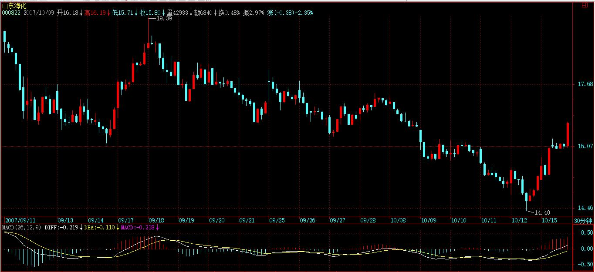
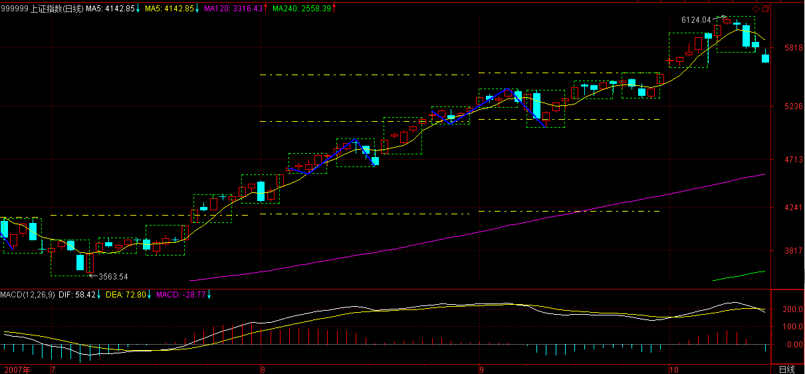

(2007-10-07 16:09:06)
【韶山映山红】新浪博客本文已经被锁不可见。 2019/07/17 12:31 】
【韶山映山红】2007-10-07星期日。不开盘。节前上证指数跳空、收阳、创新高。】
重新开张，看来停业欠各位课程不少，今天抓紧补充。
上午把国庆前就写好的打坐11发出来，这里再把国庆前就写了部分的股票84写完贴出来。
股票走势，归根结底是不可复制的，【韶山映山红】走势的历史，表面上会有重复，本质上是不可复制的。】但股票走势的绝妙之处就在于，不可复制的走势，却毫无例外地复制着自同构性结构，【韶山映山红】如果找到完全分类的自同构结构，走势就完全能够被描述，就像自同构结构在不断复制一样。】而这自同构性结构的复制性是绝对的，【韶山映山红】绝对性来源于完全分类。能够做到完全分类的自同构结构才有这个性质。】是可以用本ID的理论绝对地证明【韶山映山红】这个证明，一直有公开讲出来，也没有看到有人搞明白。】而不需要套用任何诸如分形之类的先验数学理论。【韶山映山红】分形是独立于市场走势的理论，所以属于先验数学理论。】这种同构性结构的绝对复制性的可绝对推导性，就是本ID理论的关键之处，【韶山映山红】可复制，可推导，就可以运用了。】也是本ID理论对繁复、不可捉摸的股票走势的绝妙洞察之一。【韶山映山红】走势是不可捉摸的，也就使得一切预测成为虚妄。洞察走势的自同构结构，就可以做完全分类，进而制订一个应对系统。】
注意，自同构性结构，在前面不太精确地用了自相似性结构之类的词语，【韶山映山红】自相似性结构，就说不清楚复制性了，所以用词不精确。】这很容易和数学里的分形【韶山映山红】分形是自相似性结构，不是自同构性结构。】以及利用这种先验性理论构造的理论中的一些术语相混淆，【韶山映山红】其它技术分析理论都是自相似性结构。】所以以后都统一为自同构性结构。【韶山映山红】自同构和自相似有什么异同？★可以做个专题，以后研究。】
而正因为有了自同构性结构，所以股票走势才可以被技术所绝对分析。【韶山映山红】走势不可复制，但总有一些结构的复制。如果是完全分类的自同构性结构，就可以做绝对分析。】
而任何有效的技术分析，本质上都是本ID理论的分支，【韶山映山红】本质上都是自同构性结构分析系统的一个小部分。】本ID还没看过任何有效的股票操作程序，是外于本ID理论的。【韶山映山红】都有哪些有效的股票操作程序？★可以做个专题，以后研究。】
【韶山映山红】换句话说，缠论的递归函数也是分支。★可以做个专题，以后研究。】
最近似乎很多人举出很多书，说这也和本ID的相通、那也和本ID的相通。【韶山映山红】都有哪些书？和缠论的哪些部分有相似、相通？★可以做个专题，以后研究。】
其实，这就如同说欧几里德之前或与之独立的，就有很多人知道勾股定理，但那是欧几里德的几何吗？【韶山映山红】支离破碎的片段，和系统的理论，有本质的区别。】
而且，更重要的是，本ID依然没看过任何一本书，达到勾股定理的那种程度，就更不用说欧几里德几何的本ID理论。【韶山映山红】都没有上升到完全分类的维度。】
本ID建议，除了了看本ID的理论，一定要多看别人的，这样才会有比较，本ID的理论不仅集所有技术分析理论的大成，【韶山映山红】集所有技术分析理论的大成，所以会有相似、相通的感觉。】更重要的是，本ID理论完全构建在不同的思维框架下。【韶山映山红】缠论是完全分类、不测而测的思维方式。】
这就如同中印的古代几何都很牛，但真正逻辑化、推理化、系统化、理论化的是欧几里德的，这是一种完全不同的数学路线，不明白这个，那肯定白学了。【韶山映山红】和其他技术分析理论是完全不同的路线。不能简单的由其他理论来推演缠论。】
所以，学本ID的理论，一个很关键的一点，就是要找出所有技术分析以及操作程序在本ID理论领域中的具体位置，【韶山映山红】用缠论的眼睛去看，就可以看到，其他技术分析理论讲的是缠论的哪个局部环节。】由于本ID的理论对于任何技术分析以及操作程序具有一个绝对的视角，由此，可以绝对性发现所有分析与程序的优劣与缺陷。【韶山映山红】如果是今天来写这些内容，先生可以使用《三体》的一个词：降维打击。】
注意，可能会发现，本ID理论中的有些结论，似乎和别的一些理论有类似的地方，这恰好证明了本ID理论的涵盖面。
例如，本ID的理论，可以解释波浪理论里一切的细节以及不足之处，但反过来不可能，因为本ID理论是一个更广阔的理论，波浪理论不过是一个有着巨大缺陷的不成熟理论。【韶山映山红】波浪理论有哪些巨大缺陷？★可以做个专题，以后研究。】
同样，可能在其他人的理论中，也有对K线组合定义类似分型的概念，但那些定义，都不过和一般的K线分析一样，是通过某种经验性的归纳而来，而本ID的分型定义，源自K线组合的一个完全分类，是一个纯理论的推导。【韶山映山红】完全分类，理论逻辑推导。】正因为如此，本ID理论与其他任何理论相比，都有着绝对性与涵盖性，这一点，在以后的课程中会逐步揭示的。
走势的不可重复性和自同构性结构的绝对复制性以及理论的纯逻辑推导，这就构成了本ID理论视角的三个基本的客观支点，不深刻地明白这一点，是很难有真正的理解的。
走势的不可重复性，决定了一切的判断必须也必然是不可绝对预测的；【韶山映山红】不可测。所以不预测。】
自同构性结构的绝对复制性，决定了一切的判断都是可判断的，有着绝对的可操作性；【韶山映山红】当下的判断有据可依，也就有了可操作性。完全分类。】
理论的纯逻辑推导，就证明其结论的绝对有效性。【韶山映山红】推理，而不是归纳。】
本ID的理论，是人类历史上第一次用100%理论推导的方式绝对地证明了走势分解的唯一性，这从上面关于笔、线段等分解的唯一性证明就明白，世界有哪种交易理论，是按这种绝对推理的方式构成的？显然没有，这才是本ID理论的最强大力量所在，前两个客观点如果没有最后这第三点，都是瞎掰。【韶山映山红】其他交易理论都属于归纳。只有缠论属于推理演绎。】
其实，这三点，又何止是与股票走势相关，真明白了，对你的人生与社会操作，有着同样的意义。每个人的生活，世界的变化，诸如此类，本质上，离不开这走势的绝对不可重复性和自同构性结构的绝对复制性以及相应不患的共业的绝对推理性。【韶山映山红】智慧到了一定的层次都是相通的。】
什么叫革命？就是打破某种自同构性结构的绝对复制性以及相应不患的共业的绝对推理性。【韶山映山红】打破某种自同构性结构的复制链条，变更为另一种自同构性结构的复制链条。】
知道为什么本ID说“列宁式社会主义是一个基于民族主义的策略性误读，是一个反资本主义的资本主义过程”吗？就是本质上，资本主义所具有的绝对复制性的自同构性结构从来没被打破过，这种自同构性结构就如同瘟疫，必然全球化，必然一统江湖地忽悠化，这是其不患的共业。
由此，就不难理解马克思关于社会主义必然是一个全球事件的意义所在，在资本主义都没全球化之前谈论社会主义，那社会主义，一定不是马克思意义上的。
看资本主义的必须崩溃，就如同看一个日线上涨走势的必然完结一样，本质上没有任何区别。马克思，如同本ID一样，多空通杀。反马克思者如同那些疯狂做多的多头，反资本主义者，如果那些疯狂做空的空头，他们之间的合力，就构成了资本主义的走势本身。这走势，可能不断地中枢上移，但这走势的结束，是可以精确地判断的，其判断的标准，就是背弛，整个社会大结构的背弛。现在，资本主义还在全球化中大发展，哪里有什么背弛的迹象？
但是，正如本ID所说的，多空通杀地去阻击任何的走势，资本主义的上涨，同样是可以阻击的，这方面的内容，以后在捍卫马克思系列里慢慢说。
任何阻击的关键，就是多空通杀地去壮大自己。【韶山映山红】把成本降为0，然后增加0成本的持股量。】任何一根筋思维的人，是永远不会明白这个道理的。当然，也没必要让他们明白，否则，没有一根筋思维的人，哪里去找通杀的对象？多头、空头，最终都不过是被杀的猪头。
多空通杀，不是根据自己的喜好，而是如一个零向量那样当下于走势的合力之中。【韶山映山红】无我。随波逐流。】
零向量，加多少，都不会改变走势合力丝毫，这样，才能真正去感应市场合力本身，感应其转折，感应其破裂，在电光火石的一下中出手，如风行水，如电横空。【韶山映山红】向量指具有大小和方向的量。长度为零的向量是零向量，那么，“加多少”是指什么？★以后研究。】】
不思多、不思空，如零向量般与合力随波逐浪，才可能最终盖天盖地，多空通杀。【韶山映山红】零向量，因为长度为零，也就失去了方向的描述，也就可以与合力随波逐浪。】
所以，最终，比的是人本身。就如都是玩独孤九剑的，和那些所谓五岳剑派的玩，当然见一个搞废一个。但如果最终同玩独孤九剑了，那就要比人本身了。【韶山映山红】独孤九剑，金庸小说里剑魔独孤求败所创，以无招胜有招，打遍天下无敌手。《神雕侠侣》与《笑傲江湖》中提到独孤九剑，更详细的在《笑傲江湖》风清扬和令狐冲身上。】
【韶山映山红】独孤九剑：第一招“总诀式”，有种种变化，用以体演这篇总诀。第二招“破剑式”，用以破解普天下各门各派的剑法。第三招‘破刀式’，用以破解单刀、双刀、柳叶刀、鬼头刀、大砍刀、斩马刀种种刀法。】
本ID的理论的一章，就是不断的修炼，最终能到什么层次，最终是玩小资金还是大战役，都只能与此相关。
但这还不够，光是所谓身心的修炼，只不过是鬼窟里活计，【韶山映山红】空谈身心的修炼，不过是鬼窟里活计。】你的身心，非你的身心，所以为你的身心，从此开始，才可以百尺竿头更进一步。【韶山映山红】何为“你的身心，非你的身心，所以为你的身心，”？★可以做个专题，以后研究。】
看走势的背驰、转折，不过是第一层次的东西，哪天，能看明白社会经济、政治等等结构的背驰、转折，那才是更高层次的东西。【韶山映山红】缠论的理论不只是走势分析的理论，还可以延展到其他客观世界。★可以做个专题，以后研究。】
自从结构与解构哲学的流行，用结构的观点观察，就是一个最基本的思维方式，【韶山映山红】结构与解构哲学。】但问题的关键，很多所谓结构性的思维，不过是一种归纳性的结果，不具有任何的理论系统性与有效性。【韶山映山红】“归纳性的结果”是否可以最终具有理论系统性与有效性？★可以做个专题，以后研究。】
这里，本ID必须强调一次，分型与分形有着本质的不同，本ID所说的分型，是建立在一个K线组合的纯粹分类的基础上，任何与这个纯粹分类不同的，都必然是错误的，这一点必须明白。
至于所谓的分形，当然也可能是一种结构，但这种结构，本质上都是归纳性的、因此都必然是有缺陷、划分不唯一的，和在一种完全分类基础上给出的绝对结论，有着本质的区别。【韶山映山红】为什么有本质的区别？分形本质上都是归纳性的，分型不是吗？归纳性的为什么必然是有缺陷的？划分不唯一就做不到完全分类，从这个角度看，确实不能接受。★可以做个专题，以后研究。】
其次，分型只是中枢与走势级别递归定义的一个启始程序，甚至可以说，并不是本ID理论中必然需要的东西，其目的，不过是为了中枢等的递归性定义中给出其最开始的部分，完全可以用别的定义去取代。例如，我们可以用收盘的价位去定义顶分型、低分型结构，【韶山映山红】用收盘价定义分型，与K线定义分型相比，包含关系可能会发生改变，很多的包含关系不复存在，更容易形成笔了。】也可以用成交量给出相应的递归开始部分，【韶山映山红】怎样用成交量做初始化？★可以做个专题，以后研究。】只要能保证分解的唯一性，就可以。【韶山映山红】初始化要保证的是“分解的唯一性”。】
【韶山映山红】现在缠论的分型定义是K线区间，3个无包含的K线构成分型。突发奇想，在软件上看了一下，用收盘价定义分型，比K线的分型，容易画图！尤其是那些低价位的心电图K线。很好玩啊。 ★可以做个专题，以后研究。】
【韶山映山红】如果低级别的走势是一个a+A+b+B+c趋势，AB中枢都是延伸升级的中枢，最后的离开段走的时间很短，或者其他的一些情况下，在高级别做笔划分的时候，最后的离开段不成笔，就会把b+B+c合并成一笔，也就是说，线段类趋势可能会划分为线段盘整。
【韶山映山红】日线图的Ｋ线，和其他Ｋ线的意义有本质的区别。开盘价、收盘价、最高价、最低价都可以反映这一天的交易情况，包括非交易时间对价格走势的影响。小周期的K线只是人为的划分时间段而截取数据的产物，没有相应的价格意义。周、月、季、年等周期的K线也没有足够的价格意义，只有一些人为的关注意义。尤其是小周期，真实的交易数据应该就是平滑的数据流，只有一个价格和成交量，所以收盘价可以趋近真实的数据流，最高价、最低价或者再人为设置一个平均都可以。或者说，从最小级别开始的递归，可以使用数据流的方式。 ★可以做个专题，以后研究。】
本ID关于中枢等的定义，其实一直没有改变过，【韶山映山红】上面讲初始化可以换一套，所以这里要强调中枢一直没有改变过。】
因为中枢定义的关键，在于定义的递归性。【韶山映山红】中枢这个概念的存在价值也在于定义的递归性。】
一般的递归定义，由两部分组成，
一、f1(a0)=a1；【韶山映山红】初始化函数】
二、f2(an)=an+1；【韶山映山红】递归函数】
关于第二条的中枢过程规则，是一直没有任何改变的，【韶山映山红】递归函数的核心规则就是走势类型划分规则和中枢过程规则。】而关于第一条，其实，可以随意设置任何的，都不会改变中枢定义的递归性。【韶山映山红】不会改变中枢定义的递归性。随意设置的前提是完全分类，保证分解的唯一性。】
而且，任何有点数学常识的都知道，f1(a0)=a1之前是不需要再有什么递归性的，也就是，一和二之间的f1、f2可以是完全不同的两个函数。【韶山映山红】f1可以没有递归性。只不过，分型、笔、线段构成的初始化函数有递归性。】
有些人一直还搞不清楚中枢，就是一直都搞不清楚这点。例如，可以用分型、线段这样的函数关系去构造最低级别的中枢、走势类型，也就是一中的a1，【韶山映山红】线段中枢，线段中枢构成的走势类型，都不符合递归函数的定义。都可以说，属于递归函数的范畴。】而在二中，也就是最低级别以上，可以用另一套规则去定义，也就是有着和f1完全不同的f2。【韶山映山红】递归函数可以不建立在笔线段初始化函数的基础上。比如早期缠论的3K中枢初始化。】这个问题其实太简单了，有点数学常识都不会有疑问，所以这问题，以后就不再说了。【韶山映山红】递归函数可以和初始化函数完全不同。换句话说，也可以相同。那么，如果相同，笔规则和线段规则，哪个更好呢？ ★可以做个专题，以后研究。】
至于MACD的辅助判别，已经反复说过多次，关键不是MACD，而是走势的分解，这才是关键。如果MACD真有用，那光用MACD就可以，连这问题都没解决，那前面的课程是白学了。
另外，必须再给一种错误的想法敲打一下。级别，本质上与时间无关，级别也不是什么时间结构。级别，只是按照本ID的规则，自生长出来的一种分类方法。【韶山映山红】级别，不是时间结构。不是时间函数，只是形态函数。这方面，跟分形有很大的区别。】
而所谓的时间结构，本质上和电脑软件上的K线时间周期选择一样。【韶山映山红】如果是时间结构，选择不同周期的K线图，相应的图形就会有对应关系。】
一个最低级别不到的走势类型，可以生长100年不长成更高级别的，级别与时间，本质上没有太大的关系。【韶山映山红】前面说，级别，本质上与时间无关。这里又说，级别与时间，本质上没有太大的关系。无关，说的是逻辑无关。没有太大的关系，是说表现形式上有一定的关联。比如，一笔的结束，可以是任意时间，与时间无关，但是没有小于5K线时间的笔。】
级别的关键，就是本ID设计的那套规则。【韶山映山红】级别的关键，就是中枢和走势类型的递归规则。】
级别，本质上不对任何时间结构有任何绝对的承诺，为什么？因为这里没有任何的绝对的理论推导可以保证这一点，【韶山映山红】次级别线段不是本级别笔，次级别走势类型也不是本级别线段。时间结构显示的吻合再多，也纯属偶然，并没有相应的理论推导。】级别被破坏了，就是因为被破坏了，只此而已，并不是因为有什么时间的因素、结构就被破坏了。【韶山映山红】缠师也讲时间窗口，也讲斐波那契数列，那只是经验性的运用，本质上不属于缠论范畴。】
还有一个更大的误解，有人见本ID整天说当下，那当下就最重要了。这是绝对的误解。当下之所以被反复提出，就是因为有人企图预测的想法太过根深蒂固，只是一种破的手段。【韶山映山红】预测的想法根深蒂固，而走势分析只能给出当下的结论。】
能当下，那只是第一步，而真正要破的，正是当下本身。现在，有很多学口头禅的，整天忽悠什么活在当下，而所谓过去心不可得、现在心不可得，未来心不可得，【韶山映山红】佛认为众生一切的心都在变化中，像时间一样，像物理世界一样，永远不会停留，永远把握不住，永远是过去的；所以“过去心不可得，现在心不可得，未来心不可得”。我们刚说一声“未来”，它已经变成“现在”了，正说“现在”的时候，又已经变成“过去”了，这个现象是不可得的，一切感受、知觉，都是如此。可是一切众生并不了解这个道理，拼命想在一个不可得的“三心”中——过去、现在、未来，把它停留住，想把它把握住。】又有什么当下可得？【韶山映山红】用当下破预测。用什么破当下？★可以做个专题，以后研究。】当下不只是会演化，还包括被破坏。所以，当下也不可得。】
学了本ID的理论，去再看其他的理论，就可以更清楚地看到其缺陷与毛病，因此，广泛地去看不同的理论，不仅不影响本ID理论的学习，更能明白本ID理论之所以与其他理论不同的根本之处。
本ID看到有人提到《混沌操作法》和《证券新时空》，这样，新的作业就有了，就是如果有时间，请好好研究，然后用本ID理论的眼光，去发现其理论的重大问题与操作程式上的致命毛病。
如果你能完成这作业，那么对本ID理论的理解，就更进一步了。
【韶山映山红】据说，整个混沌操作法是由五大维度（技术指标）构成的：1、鳄鱼线；2、分形；3、动量；4、加速；5、均衡线。掌握了这五大指标，也就基本掌握了混沌操作法。】
【韶山映山红】低买高卖，是逆势操作。缠论却把这个叫做顺势。那么，什么是势？可以做个专题，以后研究。】
【韶山映山红】在《证券交易新空间》中文版序言中，比尔·威廉姆博士写到：“《证券交易新空间》这本书比我们第一本书《证券混沌操作法》在内容上更为深入，含有更多的最新研究成果，因此会为你们的交易与投资提供更多的机会来获得更高的利润。本书的基础就是我们43年以来在金融证券交易与投资中的成功获利经验，这在全球所有市场之中均已得到证明。”】
更重要的是，为什么要去了解其他理论，就是这些理论操作者的行为模式，将构成以后我们猎杀的对象，他们操作模式的缺陷，就是以后猎杀他们的最好武器，这就如同学独孤九剑，必须学会发现所有派别招数的缺陷，这也是本ID理论学习中一个极为关键的步骤。【韶山映山红】缠论研修课程。以后研究。★★★】
【网文】缠论与混沌操作法的简单比较
(2012-01-09 18:16:48)
缠中说禅的理论前无古人，理当敬仰膜拜。事实上，我看他的博文，也不下三五遍了，或许对于铁杆的缠迷，这个数字可能还是太少。对于其中有网友提到的混沌操作法，最近得空，粗略看了下，对比缠论，探讨一翻。
整体来看，二者的核心思想是一致的，都是从混沌中取其结构，理论来源依然是人的市场导出人的结构。即便是混沌操作法早几年问世，混沌理论早就有，分形理论也出现几十年了，但是对于缠论来说，这些最多是注脚。相信以缠的博学，在世时发展出这一套理论之前，对于分形和混沌，肯定是了然的。而缠论对于分形和混沌在交易中的应用是建设性的，并没有拘泥于这套理论，真正是包罗万象。
二者的区别在于给混沌的市场套以不同的准则结构，用缠的角度来说，这没有区别，不管是分型还是一致性获利法，都不过是工具，重要的是这工具能够给走势以完全分类。
缠中说禅技术系统固然复杂，但是齐全完备，可以从零开始学习应用，毫无压力。但是一致性获利法则不同，它借鉴于艾略特波浪理论，但是波浪理论不过是市场结构的经验总结，若想要灵活运用，没有足够的市场经验，是难以灵活运用的。即使辅之以威廉博士发明的几个指标，也难以掌握应用，而书中所用的推销状的口吻，更是让人反感。他没有考虑到他已经积累了三十多年的市场经验，应用这套系统当然毫无压力，对于市场经验普遍不足的人来说，缠论虽然复杂，但是体系性更强。这一点上，缠论完胜混沌操作法。
缠论中的区间套定理，是分形理论的另一种表达；分型理论，和混沌操作法中的条形图系统类似；中枢理论是原创，是波浪理论和箱体理论的规范化、系统化；背驰概念在一般的技术理论中早已有之，但是给出明确定义的，缠中说禅是第一个。对于一二三买卖点系统的提出，则是缠论技术系统真正的核心之一。
市场，深究下去，还是人心。人心于出世或入世，都不离缠论所述。特此敬仰！
【网文】几何vs数字--------缠论的终极钥匙之所在
appleapplexy
当我们不知道向何处去的时候，我们应当回头看看来时的路。就从有文字记载的文明最先理解的三个抽象图像说起，直线，三角形，圆形（矩形可以看作是三角形的集群）。这三个图形如此美妙，并在人们的繁复的纯粹的几何推理之下演绎出了最早的几何学。此时也诞生了最早的数学，加减乘除。不过几何和数字的交集有限，数字问题很少被看作是几何问题，而几何问题也不被看作是可以用数字运算来解决的问题，虽然几何学里很快诞生了那个伟大的勾股定理，他有相应的数字运算的表达。这样的时光过了很久。直到解析几何的出现，一系列美妙的函数模型被深入的研究，线性函数，指数函数，幂函数，三角函数，双曲线，抛物线，圆的方程，椭圆的方程，几何问题就是数字运算的问题，数字运算模式的问题通常也就是几何的问题。一座桥梁被架设起来。随后，经典物理学横空出世。
可惜自然并不总是能简单的等同于直线，三角形，和圆或者经典的函数图像。还有一种被长期遗忘的几何，自相似性质的几何，这个特性的几何图形，普遍存在，又出离与几何原本的处理能力之外，被认为是病态的几何图形。直到1960年代分形几何学作为一种新的几何学诞生了，他有自己完全不同的研究手段和推演方法。同时，一些新的数字运算模式的研究也开始了，各种非线性函数模型的数理研究也在飞速发展， 跌代函数，分形布朗数学模型，各种能产生类似分形几何图形集的数字运算模型被陆续发现，可惜，距离像解析几何所达到的在几何问题与数字运算模型问题的对应性的完美性上，还有很大的差距。分形图形的简单的几何原则，与他对应的数字运算模型之间的关系依然显得非常的松散。执白的说，比如缠论，他提出了一个简单的几何分形原则，那么这种分形原则可以表示为怎样的数字运算模式呢。比如圆就是到一点的距离全部相等的点的集合，他的数字运算模式就是x平方+y平方=c平方，c为常数。这种具体而清晰的对应性，提供了几何问题和数字运算模式问题的强力互相转化的通道。
如果，分形问题也可以找到这样的对应性，确定的分形原则和特性的集合，就是某种数字运算模式的象图。无疑将极大地扩展对分形现象的认知，我们将既可以通过数字运算模式来求解分形几何问题，也可以用分形几何的手段，解决数字运算模式中的一些问题。这样是不是意味着一次新的科技飞跃将会发生。
几何与数字之间的美妙关系，使我们希望他总是普遍的存在，所以，西方的分形几何的研究路径一直坚守着这样的倾向，他们希望找到一个数学模型来预知分形几何过程中的未来。因为曾经他们用万有引力数字运算模式成功的预测了被观测到的成圆形轨道运行的行星的未来。而用纯粹的圆的几何知识是做不到的。事实上，也不全然，开普勒三大运动定律，是一个基于观察归纳基础上的几何意义上的判定系，它可以用来预测。
计量经济学的现代学派在时间序列的数字运算模型上奋勇前进，背后就是这种信念在支撑。
一个人在任何的对自然的认知探索背后都有一个具体的信念，那么，你的信念是什么呢，你是否坚信，决不涉足数字运算模式，就可以在分形几何的几何原则下得到一组类似开普勒三大运动定律功能的几何判定集。而完成对分形几何运动过程的预测呢。
[开普勒定律]
开普勒第一定律，也称椭圆定律：每一个行星都沿各自的椭圆轨道环绕太阳，而太阳则处在椭圆的一个焦点中。
开普勒第二定律，也称面积定律：在相等时间内，太阳和运动着的行星的连线所扫过的面积都是相等的。 这一定律实际揭示了行星绕太阳公转的角动量守恒。用公式表示为
开普勒第三定律，也叫行星运动定律。开普勒第三定律的常见表述是：绕以太阳为焦点的椭圆轨道运行的所有行星，其各自椭圆轨道半长轴的立方与周期的平方之比是一个常量。
(2007-10-08 15:35:47)
【韶山映山红】“本ID在前面已经明确说过，这资金和政策的对赌，最终的结局，一定是政策举起大棒，而资金这种行为，也无可厚非，资金就是这样的，连权证的末日轮都可以搞得热火朝天，这样的形势下，资金又有什么不可赌的？”】
今天的走势，完全在理所当然之中，节前，在纯技术的角度已经对节后走势进行明确的分析，就是先完成139开始这一线段，然后再完成137开始的线段的类上涨，然后就是1分钟中枢的形成，【韶山映山红】线段类上涨趋势背驰就会形成线段中枢。】走势如此正常地按本ID理论所框定的节奏走，所以也没什么可说的了。（今天图就不要帖了，没有任何新的标记）【韶山映山红】10月8日和前一日一样，没有完成线段。现在看到的标记，是后面走势走出来之后的划分。】
唯一可说的就是，大盘的走势特别强，所以当今天收盘，139开始的线段依然没有完全确认已经走完，当然，按正常的情况，明天只有一开盘跌破5685点，这140的线段标记就可以弄上去了。【韶山映山红】当日见顶后，一笔跌至5685点，形成第一种情况的笔破坏，只要开盘跌破，就宣告140-141线段成立，也就是139-140线段完成，“这140的线段标记就可以弄上去了”。】
然后，一般情况下，接着的1分钟中枢，基本就在目前这个范围上下形成，所以，今后几天，大盘走势如果出现大的震荡情况，是没有任何可值得大惊小怪的。【韶山映山红】虽然没有确认形成线段，但是涨势已经不如前日那么凌厉，明显的衰竭背驰了，所以缠师预言这里将成段并且出现1分钟中枢。】
政策面上，那重要的会议后，调控力度必然加大，这是毫无疑问的。因此，周末开始，就进入政策面的危险时间，至于这个时间如何被触发，就看今后几天资金的表现了。对于资金来说，现在是争分夺秒。
至于下面的几个缺口，只是为后面的下跌留下动力。本ID前面已经明确说了，没有1000点的回跌空间，大盘就没有跌的价值。把回跌的空间拉回来，这就是目前走势的关键。【韶山映山红】把回跌的空间拉出来。】
站在中线角度，只要大盘的回跌不破4335点，那么中枢的中线上移就依然保持。【韶山映山红】4335点是530的位置。】所以，目前大盘的上拉，中线的角度就在于，尽量让后面的回跌在最恶劣的情况下也不碰4335点。站在这个角度，目前的上涨确实还不够，但政策是否留下足够的时间让这空间给拉出来，这就不是任何人能打包票的了。
站在中长线的角度，12月是2005年6月上来的30个月，所以，从10月开始，就进入一个标准的时间压力区域，这时候一旦出现政策性共振，其杀伤力不容忽视。【韶山映山红】2005年6月是前期低点998的位置。】
总之，一句话，耐心等待较大级别卖点出现。在本周末之前，如果担心政策压力的，应该把仓位进行调整。目前走势下的中期顶部，不可能是市场自身走出来的，一定会有政策的背影。
现在唯一不太配合的，就是上冲力度还太小，回跌的空间还没有完全打开，和政策争分夺秒把空间拉抬出来，就是目前资金最大的任务。
个股方面，指标股拉动后，会有轮动，如果你对自己的技术有充分信心，可以关注这轮动。但注意，一定不要追高，本ID最不喜欢回答诸如明天还能不能买600078之类的问题，别股票涨起来才关注，那是一个天大的毛病，本ID还专门给作业各位分析该股回跌时的走势，买点怎么可能在上涨中形成？【韶山映山红】哈哈，缠师9月25日自己要吹牛，这下又烦了。“有些股票，如果技术好的，可以不断震荡减低成本去介入，例如600078。”】
【韶山映山红】600078澄星股份。】
股票操作其实很简单，就是一个节奏问题。
但很多人，包括很多所谓的专家，都喜欢让人突破后追股票，这种人，永远只能是散户一个。
放假后有很多事情要处理，周末还要去某某会一把，要准备些东西。抱歉，不能回答问题了。
先下，再见。
(2007-10-08 21:46:52)
7月初，在3600点下，本ID严正宣布要做多，不允许行情按汉奸的方式运行到2000点去，为什么？因为任何跌破3100点的走势都将导致2年多以来的中枢上移趋势被破坏。
今天，本ID开始宣布，从3600点开始的做多以及持有程序将开始终结，本ID将开始选择性地展开中期做空程序。
这里，说明其中的理由。
一、长期牛市的大格局没有改变，但长期牛市并不排除期间的中期调整，以前，所有关于调整的时机都没有完全配合，而现在，这个时机已经逐步成熟。
二、本ID在博客里明确提示政策风险的是“冲动的惩罚，基金将成为毁掉市场的那只手2007-08-27 20:45:41”，原因很简单，因为当时有些可能的突发事发生，那时刚好在5200点上下，在电光火石中，一场大动荡被化解，当时的微妙，后来应该也有不少人有所耳闻了。
三、但当时，做空的条件不成熟，关键是政策面上有不协调的地方，而技术与资金上，一时还转不过来，特别是，没有足够的下跌空间，因此，后面的一个月的震荡，实际上都没超过6%的空间，这就是一个稳定与转换的过程，这样，不至于让资金如530一样措手不及。
四、目前，政策面上已经不是一方面或一个人的事情了，可以断言，不光针对股市本身，针对经济本身，也将出台更加严厉的政策，原来适度的口径，极有可能继续收紧。而针对股市的，本ID一度希望股市自身调节而不至于被迫出来的政策，也有可能不可逆转了，因此，政策面的压力已经逐步成熟，如果说8月28日只是一叶知秋，那么，在可见的将来，秋天就不需要去知道了，就在眼前。
五、技术上、资金上的松动已经开始发生，这时候，一些适当的引导，就可能发生一些有效的反应。市场是合力的，但合力是由分力开始的，如果3600点的分力曾经起作用，那么，一个新的剧本，也需要开始排演了。
六、现在唯一不配合的，就是回跌的空间还不足够，如果现在已经突破6100点，那更好。因为这次回跌，本ID并不希望破坏2005年上来的中枢上移格局，因此，这次的中期顶部阻击，会采取一种反复折腾、诱敌深入的模式，而不是如3600点那样，一下搞掂。
七、本ID曾经说过，如果快速突破3/4线，将开始阻击。后来因为大盘回跌5000点后一直盘整，所以曾说只要6100点不被快速突破都可以忍受。但现在看来，政策留给的空间已经越来越少，而今天又第一天突破3/4线，已经开始达到本ID对3600点开始行情的最低目标，任何的回跌，本ID都没有任何遗憾了。而能否到6100点，本ID已经没有这个顾虑了。
八、本ID只把自己的操作说出来，没有任何指导的意义。就像3600点的做多，然后一路的持有。现在，本ID只是准备改变中线的操作策略，没什么大事。本ID有可能错了，但本ID说了，就要干。
九、长线行情，本ID依然坚定看好，只是这政策、资金、技术所制造的中线调整，本ID也希望再3600那样玩上一把，如此而已。
十、做空的风险比3600点做多小多了，头部和3600点的底部一样，是合力的，但也是由一分力开始干出来的，本ID就再做一次那分力吧。
十一、别以为做空就是砸，那是最笨的手段，做空的本质，就是让多头自相残杀，因此，做空开始的时候，经常要比多头还要多头。
十二、底部不是一天构成的，顶部也是，一切的构造，都是在逼近那资金、技术、政策的共振点。然后，一切在无声中败落，如那一片片的黄叶。
【网文】用正确的姿势做空
有人说，你这个浓眉大眼的价投也开始讲做空了？
事实上，我的做空经验应该比绝大多数雪球用户丰富的多。做交易员时，一周的做空次数恐怕比在坐的各位一年做空次数还多。加之聪颖勤奋，好学自省（好了好了知道脸皮厚了）总结了一些做空的原则。当时有其他交易团队请我去讲课，颇受新老交易员好评。
做空本没有错，是资本市场常见的交易方式，不过姿势不对的话，却容易酿成大错。
大部分投资者把做空默认成做多的同一策略在反方向上的操作，图样图森破。简化的做多策略一般是买入并持有，基本面好，估值低，都可以成为买入并持有的依据。但反过来，公司基本面差且股价高估，却并不是立刻下空单的理由。因为做多策略的下半部分“坐等”是坐在椅子上等，而做空由于具有较高的交易成本，且面对股价波动仓位安全存在很大的风险，是坐在热锅上等。
做空三不
做空不宜长线作战。忽略了做空与做多在持仓成本，潜在收益率和波动风险方面的巨大差异，是大部分做空操作被烫屁股的主要原因。不融资的话，做多持仓成本是零，甚至于还能收股息增加现金流；做多的潜在收益率理论上没有上限，长期持有获得惊人收益的实际案例数不胜数；且股价再怎么波动，也不会强迫你下车。
反观做空，融券成本动辄十几二十多百分点，最少也要2%以上；直接做空的潜在收益率上限是100%，已实现收益（浮盈）会压缩未来的期望收益率，做空操作应该更加重视把账面盈利放进口袋；股价向上波动个一倍，就被强制平仓了。除此以外，券商随时可以收回借给你的股票，影响你的长期计划。以上几点，决定了做空不宜长线作战。
做空不要执着于逻辑。逻辑的演化时间漫长一些的话，即便股价最终下跌，融券成本就能吞噬你大部分利润；又或是逻辑实现前，多头凶狠的来一波逼空，不管是流通盘较少情况下“主力”地刻意拉升，还是乐观情绪蔓延市场时散户争先恐后的上车，都有可能让你收到券商的Margin call，即便后来时间证明你的逻辑是对的，但对于一个死掉的仓位，还有什么意义呢。
做空不要陷入幻想。做空跟做多相比还有一个重要区别，做空更容易陷入阴谋论，幻想出一个庄正虎视眈眈盯着自己的做空仓位伺机逼空。这是因为做空仓位有很明显弱点，持仓安全很容易被股价波动影响。由于“庄”的存在，投资者更容易把做空操作看作一场对弈，心里喊着“老子不会认输的！”，很难保持理智重新审视自己的判断。所以空仓的对手其实不只有“多头”，还有一个容易陷入不理智境地的自己。
做空应该采取跟做多完全不同的策略。做空不适合深入谋划，长期布局，坚守阵线，而应该顺水推舟，落井下石，灵活作战。做空操作，不要做中场发动机，要做禁区里的幽灵，适当的时候出现在适当的地方，伸出临门一脚。
做空操作建议：
合理设置预期收益，不要超过60%；
小仓位，不超过整体资金量的1/10，不要让个别投机操作影响到整个账户的投资计划，切忌逆势不断追加空头仓位；
无论是盈利还是亏损，做好迅速平仓的准备。
最后，不要把做空作为主要的投资策略，单独的做空操作（非对冲做空）应该明确的看作一次投机行为。近些年最著名影响力最广泛的做空案例，是2008年次贷危机时对次级贷及相应深受影响公司的做空。最终，做空的投资人们名利双收，然而不管是被索罗斯请去喝茶的保尔森，还是大空头里的麦克巴里，他们做空的过程煎熬而痛苦，甚至于众叛亲离。相比每天跳着踢踏舞去上班的巴菲特，你更想做谁？
作者：刘志超
链接：https://xueqiu.com/3386153330/108203342
来源：雪球
著作权归作者所有。商业转载请联系作者获得授权，非商业转载请注明出处。
(2007-10-09 08:03:06)
注意，昨晚，本ID只是表明自己的中期态度与操作。但就算本ID，也要遵循本ID的理论。本ID只是分力之一，分力如何最终引导出合力，这就是本ID要干的事情。但并不是说一定就一天就能干成。
请回忆一下3600点，一长阴一长阳的空头陷阱，然后在3900点下坚守出底部突破来。那么这次，并不一定就是上次的倒影，手法当然不可能一样的。如何用一个分力引导出合力，这本来就是本ID理论中一个比较高级的课程。
这个课程能完成的关键，就在于技术、资金、政策的共振点的制造，这里学问不少，但实际中能否成功，关键还是看这几方面的调配点上的把握上。这就如同三个不同方向不同速度的网球，在空中于一点中相会，例如政策这个网球，就不是任何人能控制的，唯一能调节的，就是技术、资金等的结构关系，这里就需要有一个分力出来折腾。底部、顶部都是折腾出来的，折腾需要时间，最终走出相应的形态，然后坚持，最后突破。当然，做空的时候，就是跌破了。
所以，这是一个大的过程，并不是一天就要完成的。但如果政策配合，这个过程可以相当简洁。这次，本ID之所以主动反空，就是不希望再如530那次一样，让技术、资金去配合政策，而是玩一次这样的游戏，让政策去配合技术、资金。这如同先把两个网球的交点先给制造出来，然后让那政策的网球刚好碰到该点，这里的难度有多大，可想而知。
但这种游戏，才有玩的趣味。
站在本ID理论的角度，本ID只是分力，而散户只需要知道最终的合力如何，然后根据该合力去决定自己的进出，其实根本不需要太关心本ID的态度。
一般的散户要进要出，1秒种就可以搞掂，还是耐心等待大卖点的出现。当然，如果你觉得自己没那本事、没那心态，那就逐步分批退出，或者把仓位降到发生任何情况都可以睡着的程度。
如果本ID的行动能最终制造出大级别卖点，那么，本ID就游戏成功，否则本ID就被继续的多头夹空了。当然，如果那时候政策出现新的多头走向，那也不存在夹空的问题，本ID完全可以进入新的板块，或者反手做多。当然，目前没有任何迹象表明政策有转多的可能，上面这只是理论中完全分类的情况，基本没可能出现。
说白了，本ID之所以高调告诉各位，更重要的原因，是希望各位如3600点那样，去体会合力与分力的关系，以及在更高层次上，如何实际分力去合力的引导。不管这次本ID成功与否，都是一个最好的现场教材。
这用N多资金、筹码画出来的教材都不看，那就去看股评去吧，没必要学任何东西了。
(2007-10-09 15:26:41)
今天，如期出现昨天说的板块轮动，现在，无论多头空头，都需要这个轮动出现。对于空头来说，板块风烟四起，正是消耗多头能量的一种手段。如果一旦出现所有板块都轮动，但没有任何板块能连续上涨的情况，那对多头信心就是一个有力的打击。
昨晚已经说了“做空开始的时候，经常要比多头还要多头”，四处点火，那多头那点柴给烧没了，这就是做空程序的第一步。但多头不会一下死的，必须反复折腾，今天，在技术上，并不必然今天出现的一分钟中枢今天出现了，这对于空头的游戏，有了一个可依靠的平台。
目前，决定多空最后胜负的，还是政策面。因为，纯资金上说，一点都不存在任何一定要在这里或这段时间内见顶的可能，但市场是合力的结果，不是单纯资金分力的结果，所以，单看资金面，没有太大意义。
个股方面，该水井坊的都会水井坊的，当然，有些个股起来，纯粹是为了耗费多方能量，这里有很多微妙的地方。【韶山映山红】微妙的地方。以后研究。★★★】
从纯感情方面，本ID很希望大盘能过6100点，因为本ID有这方面的情结。96年的大牛市，就是在6100点结束的。【韶山映山红】“96年的大牛市，就是在6100点结束的。”1996.01.19上证指数从512点开始，至1997.05.12的1510点的一段行情。1997年5月12日深成指6103.62点。】显然，6100点对于这轮牛市不算什么，但能否在这次，政策面有足够的时间让大盘见一次6100点，本ID没有任何的情结。
【韶山映山红】1997年5月12日深成指6103.62点。】
大资金做空，其实没有任何风险，本ID可以把底牌都告诉各位。如果政策上没有出现预期中的东西，在11月前后的时间压力区中没有预期中的共振，大不了就再玩一次今年初的游戏，低价革命一次，如此而已。
忙，先下，再见。
(2007-10-09 20:57:56)
在经济发展中，希望不出现任何的泡沫，是不切实际的。泡沫是必然的，而泡沫破裂引发经济调整，也是经济发展的必然规律，这个阶段，从本质上是不可逃避的。
但不可逃避的泡沫，亦有好坏之分。区分的标准就在于，是否最终影响到实体经济的深层结构与运行。通俗地说，股票市场的泡沫，属于好泡沫；而房地产市场的泡沫，就属于坏泡沫。股票市场，就算泡沫破裂了，但由于不是直接作用在实体经济层面，所以其影响是有限的；而房地产市场的泡沫一旦破灭，整个银行、金融体系就将受到最直接的冲击，其影响是灾难性的。
如果股市泡沫破裂是一场重感冒，那么房地产泡沫就是癌症了。世界经济发展历史上，关于这两种泡沫以及相应破裂后的影响，都有很多经典的例子，而其中最为熟知的，就是美国世纪之交互联网狂潮引发的股市大泡沫和破裂，以及日本上世纪八、九十年代房地产狂潮引发的经济大泡沫和破裂。
有一种错误的观点，认为日本那次的世纪大泡沫是因为股市引发的，而实际上，最终引发其经济大跳水的是房地产泡沫以及泡沫破裂后造成的整个金融体系的严重破损。单纯说股市泡沫，日本那次和美国的互联网泡沫根本无法相比，美国那次连市梦率都炒出来了，纳指更是几个月内就从5000多点崩溃到1000多点，但美国经济并没受到太大的影响。为什么？就是因为房地产泡沫没起来，而银行、金融体系没有受损，实体经济依然健康。
而美国这次的次级债风波之所以危险，就是因为来自房地产，一个如此小的波折就引发银行、金融体系的不少震动，由此可见，房地产的问题绝对不会是小问题，其放大效应与对银行、金融体系的影响都是致命的。美国这次之所以还不会出真正的大乱子，就是因为其房地产还没有形成真正的泡沫，因此，暂时还是虚惊一场，但这已足以引起各方警醒。
比单纯的房地产泡沫更大杀伤力的，就是股市中房地产股票比重太大，在虚实两方面制造房地产泡沫。房地产企业，通过所谓的重估，拉抬自己的股价，从而用极高的价格在市场上圈钱，再去圈地，炒高土地价格与房价，然后再进行重估，开始新一轮恶性循环。没有比这种游戏更能制造恶性经济泡沫的，这绝对是致命的游戏。
因此，当某些公司戴上世界上最大房地产企业的高帽高呼要去冲击万亿市值并借此大肆高价增发圈钱，有些股票只是因为某房地产企业的注入就连拉几十个涨停之时，这房地产与股市的虚实结合所产生的危机就已经到了不可忽视的地步。在股票市场上做庄的，只要资金链不断，那杠铃还不一样能一直举着？那些大面积囤地的房地产商，本质上和庄家没什么不同，如果他们从资本市场、银行体系上不断补充新鲜血液，那房地产的狂潮是不可能得到平息的。
中国房地产行业的发展不是太慢而是太快了，必须在相当长时间内限制房地产企业的上市以及再融资，严格控制房地产企业的信贷规模，严厉打击囤地现象。而对房地产的发展，其战略以及政策、资源等的配置，都应该采取双轨制。世界上绝大多数国家与地区对房地产问题的解决，本质上都采取双轨制，而不是单纯地把房地产问题抛给市场。
面对大多数公民，房子绝对不是奢侈品，而是必须品，必须保证的权利。“居者有其屋”，这就是检验一切房地产政策的最基本标准。对于大多数居民的居住问题，完全市场化的方式是绝对行不通的。而中国的宪法规定土地公有，因此国家的土地必须首先保证所有公民最基本的居住需求，在满足这个需求之后，才谈得上市场化的需求。而对于少数经济能力较强的公民，可以通过市场化方式进行更高标准的房屋消费，其价格可完全由市场供求关系决定。
总之，房地产问题的处理绝对不能实行“拖”字诀，这问题越迟着手解决，积累的风险将越大，而相应化解的手段也将越少，一旦积重难返，那就是病入膏肓、无药可治。而中国经济的希望，不在于有多少世界级房地产企业，而在于有多少领导世界技术发展潮流、真正有自主创新能力的企业。至于那些过多关系能量、过少技术含量的房地产企业，在财富榜中还是不要太多了。
(2007-10-10 15:27:14)
今天没什么大不了的，一切尽在空头主控中。本ID已经说了，在做空开始时，一定是比多头还要多头，为什么？这叫吸精大法，就是要用不断的点火来消耗多头的能量，吸其精气，然后用大幅度的震荡夺其心神，最后将多头变成一具僵尸，在那最后的三面共振中，如风中黄叶般片片飘落。【韶山映山红】三面：技术面、资金面、政策面。】
今天的回落，刚好触及140-143的1分钟中枢的震荡区域，但没有触及的中枢区域，因此，如果这下来的线段明天不继续延续，将构成一个类第三类买点，然后上去，再继续。这里有一个微妙的地方，今天留下这个线段不走完，就给明天的运作留下回旋的空间。一旦明天没有特别的东西，那么就继续上攻，继续吸精大法，毕竟多头的能量还在，让多头更快更强更高地套住，以后的杀跌动力才足够，这就举得越高，跌得越惨；如果明天就有足够的政策配合，那么这线段就直接杀下去，让那1分钟中枢扩展开来。
板块上，中字头全面开花，连潜伏许久的中铝都启动了，这火确实有点燎原。
而所有的低价股都一路潜伏，为什么？空头明人不做暗事，昨天已经把底牌说了，一旦11月前后没有政策面配合，就算做空失败，大不了重新开始低价革命，这叫两头准备，永不落空。这就是中字头、题材股两个翅膀的妙用。当然，如果时间延续太长，政策都不出来，题材股也要动一下，不可能一直压着。
好，现在技术与资金的大战已经开始，就等待政策的那一轮圆月了，听说，月圆的日子，会鬼哭狼嚎的。
为了不让不学无术的多头太容易看到图形分段，本ID的图就不帖了，这里的人，个个冰雪聪明，有人昨天连中铝要动都能猜到，分段肯定没问题的。
多头不会一下被打死的，最后射死多头的，一定是政策。耐心等待三面一点的时间撞击吧。有技术的，可以按照图形上下折腾，机会多多。没技术的，就把仓位逢高调到任何情况都能睡着的程度，拿好小板凳就看戏吧。
忙，先下，再见。
(2007-10-10 21:58:41)
对不起，这几天特忙，今天回来太晚，没时间写帖子了，刚好有一个的新文章，回应了本ID前面一个帖子““港股直通车”难以背负的使命”里的类似观点，转帖一下。这加大蓝筹流通量的观点，大概也将逐步燎原，最终成为政策的一部分了。
华生：5000点之上预警A股虚胖
2007年10月10日
华生表示，虽然最近泼了很多冷水，但用心是希望有持续发展的资本市场
"我不是唱空者，我们泼冷水，发各种警示，目的是为了避免泡沫积聚导致破裂的情况发生。"
当上证指数站上5000点，投资者一片欢呼之时，一篇不太"和谐"的文章--《市值远超GDP的虚胖与警示》在《第一财经日报》刊登后迅速在坊间热议。这篇文章的作者就是华生，燕京华侨大学校长。
2001年7月1日，在股市接近2245最高点时，华生发表文章《漫漫熊市的信号》，预见了未来熊市的来临；在2005年5月10日股指即将逼近1000点时，他再次发表文章《市场转折的信号》。去年6月，他还专门撰文指出中国将《迎接证券市场的新时代》，称中国股市市值将增加10倍。
今年以来迅速增长的市值和股市中出现的一些不正常的现象，开始让这位理性的学者担忧。现在的华生，已经被市场戏称为"空头司令"，近期的几篇文章，无不是在给股市"泼冷水"。
日前，在接受第一财经频道《会见财经界》和《第一财经日报》联合采访时，华生详细阐述了他对于当前股市的看法。
虚胖与警示
刚刚过了2007年"五·一"节，华生突然从一个非常积极乐观的角色转为市场的看空者，并且一写就是两篇文章，题目也很惹眼，一篇叫《市场过热的信号》，另一篇就是《市值远超GDP的虚胖与警示》。
在一般人看来，中国资产证券化的提升应该是一个好事。然而，华生现在却说市值"虚胖"了，这是不是危言耸听呢？
"我从来也不知道市场的高点在什么地方，低点在什么地方。但是作为一个严肃的研究者，一个经济学家，他对市场运行的趋势、规律应该有自己的判断和分析。"华生说，之所以把话说得比较严肃，是因为当时包括垃圾股在内的炒作都非常厉害，"当时炒作的气氛甚至比现在炒到5000点以上的气氛还要浓，我认为这个现象是不正常的。"
由于国家及时出台了一系列政策，"5·30"以后，市场出现了一个大的调整，被认为投机气氛严重的垃圾股炒作在这之后得到了很大抑制。
"虽然很多垃圾股远远没有回到前期高点，但是应该说市值进一步扩张的势头没有停止，而且在加速。"华生说，"我的研究发现，中国证券市场的市值不是刚超过GDP，而是上市公司市值已经是GDP的150%了。"
"为什么呢？我们不能把在香港上市的一些内地企业，以及在纽约、新加坡、伦敦上市的企业，不能把它们忽略了。因为它们也是境内的公司，特别是随着它们的回归，这个市值自然就加进来了。它们没回归，也并不是不存在，仍然是我们境内的公司。"华生说。
按照全球的情况，一般发展中的国家，证券市场的市值是GDP的20%~30%，中等发达国家大概是在50%~60%，发达国家在90%~100%。
"从微观的指标来说，目前我们股市的市盈率已经是世界第一了，我们经济增长是很快，但实际上经济增长快的并不只是我们啊。印度增长也很快，俄罗斯经济增长这几年也很快，但人家并没有这么高的市盈率。另外一个指标，市净率，我们也是世界第一。"华生说，这确实是值得警惕的。
应大大增加流通市值
华生的文章经过媒体发表以后，产生了很大的影响，同时也引来了一些质疑的声音。第一主要是认为，拿中国的情况和当年的日本比，是否具有可比性。因为日本在泡沫期时，宏观经济增长已经很低了，而中国的经济增长还是很高。
第二点就是中国的市场，因为供求结构的关系，所以市值有一定的失真性。比如说一些大蓝筹的市值是在大量股权都不流通的情况下，由于资金量的推动把市值炒高了。
"对于第一点，实际上我们不光是和日本比，包括当时的韩国，都经历过这样的情况。"华生说，我们不希望重复这个历程，所以我们要提前预警。
"对于第二个问题，我认为实际上是支持我的观点的。我说的是'虚胖'，'虚胖'的含义是什么？就是因为你只上市了这么一点，因此你的总市值是被夸大了，所以第二个观点和我的观点有相同的地方。只是角度不同，得出来的结论好像有差异。正因为我们上市的流通比例太少，造成了整个市值的虚估。虚估使得流通股股价太高。这样就会带来一系列的危害。"
"特别要说的，就是我们现在大盘蓝筹股上市的比例太低，这个对马上要搞的股指期货是非常危险的，你想，投资期货主要是跟大盘蓝筹股锁定，如果大盘蓝筹都是一个小盘，用一个几百亿的市值就能撬动一个几万亿的市值的话，这样的指数应该说在全世界是很少见的，几乎没有。它的危险很大。"华生特别提醒说。
"引出来的政策结论是什么呢？为了去掉'虚胖'，就应该大大增加流通市值。"华生说。
虽然在华生眼里，现在的股市已经出现一些不正常的'虚胖'，但华生认为，并不看好政策一下子把股市打压下去，而是希望以更平缓的方式来进行。
"在这点上我和看多派是有相同之处的。我们都高度重视资本市场对于国家，特别是对于我们这样一个正在崛起的大国的意义。所以，虽然最近我泼了很多冷水，但是我们的用心是希望有持续发展的资本市场。"华生说。
"我们的目的绝对不是打击它。所以我说不希望政府用过于剧烈的行政或者经济手段去打压。那么，为什么政府还要发挥作用呢？我们这个市场政府本来就在扮演一个重要的角色，比如说供应多少，一个公司上市是2%还是20%，本来就是政府决定的。本来就不是一个市场行为，我们希望政府用一个更符合国际惯例的、更适合市场经济发展的、更少给市场带来冲击的办法。"
"比如，我觉得像大盘蓝筹股，让它们的上市比例高一些，最低也要像《证券法》规定的那样达到10%。有相当多的公共流通股对于刚才我们说的改善公司治理结构是很有作用的。"华生说。
供需变化失衡
尽管支持市场已经过热的专家和观点越来越多，但包括政府出台的调控手段在内和各路专家的警示，仍然无法按捺住投资者的热情。
华生认为主要是两方面的原因。一方面，政府今年出台的措施，除了印花税以外，其他都不是针对股市的。
再就是从证券市场本身来讲，今年以来，由于需求形势的变化，牛市的赚钱效应，存款负利率，使得大量的资金涌入股市，需求发生了巨大的变化，但供给却没有发生多大变化。一段时期以来，每个月涌进市场的资金都有几千亿元，但股票供给所需资金只有几百亿元。
"任何市场供不应求就是价格上涨，而我们现在证券市场价格上涨的状态从5月份以来，包括证券市场从业人员，大家都分析了，应该说资金过多，追逐有限的股票，在供给不增加或者增加非常有限的情况下，价格上升就很难避免。"华生说，"9月份开始，大盘股的供给开始增加，市场的供求关系马上就有变化，但供给增加有很大的波动性，预期也不明确。现在的问题是，其实大盘蓝筹股不必要上得多快、多急，而是应该成熟一家上一家。但只要上市，至少要有10%~20%的流通比例，使公众公司的名称名副其实。"
"为什么说上市的比例和质量比公司数量更重要呢？我们可以看一看A股和H股的差价。有人说市场不同就应该不一样。其实最主要的原因就是供求关系。H股的流通盘平均是A股的7倍左右。如果A股和H股上市流通量差不多，A股和H股就不会有多少差价。现在A股上市大公司的比例人为地压得很低，很多只有百分之二点多，迫使投资人只能高价入市购买。所谓'虚胖'，就是人为地控制上市比例，造成股价虚高。"
"从今年四五月以来，我没有主动地推荐任何人进入这个市场，但我也不会随便地劝人离开。因为任何一个市场永远都有投资机会，即使在泡沫的时候，仍然还有优秀的股票。"华生说，我只能说现在的证券市场风险很大，每一个投资者要有自己承担风险的能力。
□ @华生 第一财经日报
(2007-10-11 15:32:44)
今天，即使不为中石头的精彩而鼓掌，到尾盘，连李军人都奋力而起，至此，如果都没有一点感动，那本ID也没什么可和各位说的了。现在，空头正为让多头更高更快更强地替股票站岗而大大地努力着，这一点难道不值得各位眼泪一番吗？

昨天已经超明确地说了：“一旦明天没有特别的东西，那么就继续上攻，继续吸精大法，毕竟多头的能量还在，让多头更快更强更高地套住，以后的杀跌动力才足够，这就举得越高，跌得越惨”，现在的方针，已经十分明确地说过，只要没政策，就沿着目前的速率，一直震荡攻击，把中字头搞得比八、九点的太阳还要太阳，指数比打了鸡血还要鸡血，但一般人，肯定赚不了一分钱，这就是分化的力量。
没有什么比看着指数涨，绝大多数人都亏钱更能打击多头情绪的了，把所有拉指数的都给掀起来，这些东西，都是双刃的玩意，拉的时候快，跌的时候的速率就更快了，把多头的能量转化为势能，最后势能转化为下跌的动能，这从来都是做空的不二法则。【韶山映山红】高位有势能，涨跌有动能，多头的能量又是什么能？★可以做个专题，以后研究。】
明天，将是一个坎，周末的消息面是仅仅加个0.54的息，还是来一个继续增加印花税或者其他硬玩意，还是什么都没有继续消息真空，就决定了后面游戏的线路。明天走势，消息面的动向决定一切，所以明天消息漫天飞是必然的。
技术上，144-147的1分钟中枢也形成了，148的线段没有结束，而今天2点的跳水肯定没有杀伤力，为什么？交替原则，昨天才来过一次，今天就要交替了。【韶山映山红】前日跳水成段，今日跳水成笔。】
个股方面，没有参与中字头游戏的，肯定受苦了。中字头、题材股，一拉一压，才能保证做空的绝对安全，一旦政策不兑现，那么反手做多才有好的题材与空间。这是大资金运作的必然选择，没有什么残忍不残忍的。市场就是这样的，又不是吃大锅饭，一定要人人有份。
但如果政策没有立刻兑现，题材股会在超跌后有反弹，也给中字头一个休息的机会。
明天收盘后要出一个短差，去深圳签一个合同，后天再赶回北京，所以明天收盘，没时间写了。
今晚会有一个帖子，先下，再见。
(2007-10-11 20:05:25)
明天收盘就要去机场，晚上到后天下午，都有忙不完的事，不能发帖子了，明天的解盘，可能要周六晚上或周日才能补上，抱歉。
中国现代历史上，有一个团，出了三个战神，在前后两次的统一战争中所向披靡。最绝的是，三个战神，却都是政治上的侏儒，其中两个都死在坠落的飞机上。这个团，这三人，不用说，所有人都能说出他们的名字：叶挺、林彪、粟裕（准确说不属于叶挺独立团，而是后来由此扩充成的24师）。
参不破这三人的命运，对中国现代历史的知识等于0。
项叶、毛林、彭粟，【韶山映山红】项英叶挺、毛泽东林彪、彭德怀粟裕。】就如同宿命中的前世纠缠，人之多面与复杂，超过所有的戏剧、小说，而这，只构成三人命运的一面。
历史，从来都是最好的小说、戏剧。
以命运与性格的有趣程度来分，林、叶、粟，林彪显然是最有趣的一个。最近，林副主席已经可以有新塑像了，这确实是历史的进步。但以其命运研究对中国现代历史研究的重要性来分，其顺序大概要变成粟、叶、林了。粟身上扩散出来的历史脉络，虽然单纯，但也太令人回味无穷了。林，某种意义上是一种结构性的终点。
【韶山映山红】2007年9月24日，平型关战斗70周年之际，山西灵丘平型关大捷纪念馆前的将帅广场，山西省委宣传部等主办的纪念平型关大捷70周年暨纪念馆新馆开馆仪式在这里隆重举行。林彪全身铜像第一次竖立在中国大地上。】
【韶山映山红】湖北黄冈林家大湾林彪纪念馆。2007年12月7日，林彪百年之际，林彪家乡林彪纪念馆展览出林彪铜像。】
【韶山映山红】黑龙江双城四野前线指挥部纪念馆里的林彪铜像。
【韶山映山红】位于武乡县城西面八路军太行纪念馆广场上的将领塑像。左起：129师副师长徐向前、115师师长林彪、八路军总部参谋长叶剑英、八路军总司令朱德、八路军副总司令彭德怀、八路军总政治部副主任邓小平、129师师长刘伯承、115师副师长聂荣臻、120师师长贺龙、115师政治部主任、政治委员罗荣桓、八路军总部副参谋长左权。】
【韶山映山红】陕北某处林彪战斗过的山岗上的林彪铜像。】
【韶山映山红】林彪故居内的林彪塑像。】

【韶山映山红】文革时期，林彪与毛泽东在天安门城楼上。】
【韶山映山红】1966年毛泽东和林彪在一起。】
【韶山映山红】特别值得一提的是，“林氏三杰”中的大哥林育英，是享受过伟大领袖毛主席一生中唯一一次执绋抬棺高规格礼遇的人，这在我党历史上是绝无仅有的。 1933年，林育英奉命赴莫斯科任中共中央驻共产国际代表。1935年7月，受共产国际派遣带着密电码化名张浩回国，到达陕北瓦窑堡，找到与共产国际长期失去联络的中共中央，使党中央恢复了与共产国际的联系。 毛主席请林育英出面说服了张国焘取消另立的“中央”，避免了中共党内的一次重大分裂。 抗日战争期间，陕北红军改编为国民革命军第八路军，下辖115、120、129三个师，林彪和林育英分别担任了115师师长和120师政委。据说，当时毛主席开玩笑说：“假如林育南还在，干脆八路军这三个师都由你们林家包了。”“林氏三杰”的威名及地位由此可见一斑。 1942年3月6日，林育英在延安因病去世。3月9日，中央决定公祭林育英。公祭之前，毛主席对朱德、任弼时等人说：“林育英是一位很好的同志。他的去世，是我们党的一大损失，我心里非常难过。我想，同志们的心情也是如此。为表示我们对他的敬意和怀念之情，我提议，他的灵柩由我们几个主要领导人亲自抬。” 下面照片为毛主席等人亲自为林育英抬棺。】

叶，其命运是古典式的，大概更容易被审美；粟，其命运是现代式的，寂静而喧哗；林，其命运如此后现代，真不枉此生矣。
三人有一点是共同的，就是都没有彭大将军之流的暗器工夫，彭大将军的暗器工夫之一流，那姓张的江西老表一定知道。【韶山映山红】张国焘(1897-1979)，字桤荫，又名特立。江西省吉水县人。】
叶挺、林彪、粟裕，真正的战神、真正的伟丈夫，岂宵小可比？！
【韶山映山红】三战四平之战失利后，林彪于1947年7月13日写了一封信给一纵司令李天佑。四野一纵就是后来的万岁军38军。
天佑同志：
总部2日关于夏季攻势经验教训总结电，盼切勿草率看过，而应深切具体地研究，使今后思想有个标准：要把实事求是的原则，一切决定于条件的原则(这个原则我同你谈过)，革命的效果主义的原则，实践是正确与否的标准的原则，加以很好的认识。
你是有长处的，有前途的，但思想不够实际。夏季攻势中。特别是四平战斗直至现在，从你们的电报和你们的实际行动的结果上看，表现缺乏思想，缺乏见识。为了今后战胜敌人，盼多研究经验和学习毛主席的军事思想。
凡一切主观主义的东西，无论他是美名勇敢或美名慎重，其结果都要造成损失，而得不到胜利的。正确的思想的标准，是包括实践在内的唯物主义，反对唯心主义，在军事上要发挥战斗的积极性，而同时必须从能否胜利的条件出发。
凡能胜利的仗，则须很艺术地组织，坚决地打；凡不能胜的仗，则断然不打，不装好汉。如不能胜的仗也打，或能胜的仗如不很好讲究战术，则必然把部队越搞越垮，对革命是损失。
以上原则，有益于进步，望深刻体会之。这些原则同时也是我正在努力加深认识的东西。
林彪
7月13日
】
这个帖子要回一下，确实是挺有意思的3个人。
叶英年早逝，虽然可惜，但是也少了很多是非。叶性格和当年的共产党将领不太一样，喜欢高头大马，西装革履，仪表堂堂，气度不凡；和一堆平民朴素，布衣草鞋的其他干部截然不同。叶性格倔强，职位高，威望高，这样的人如果没有那个以外的飞机失事，今后的结果和林，粟恐怕也不过是异曲同工吧。倒是这样省却了历史的麻烦，省却了历史颠倒黑白的麻烦。
粟是个至少和林齐名的大军事家，说的夸张一点，可以说整个淮海战役是他一手策划领导的。但是这是直到近几年才慢慢为人所知，因为刘邓大军的功绩要充分宣传，不能只是配合陈粟。58年粟早早就被批判下岗，倒是也躲过了后来水更急山更险的历次斗争。站到了风口浪尖上的那些人后来反而更惨。塞翁失马焉知非福啊。粟死的早也是因为身体不好，不然朝鲜很可能就是他去了。可惜历史没有给这样一个军事家一个展示才能的机会。
林的命运都熟悉，争论更多，谜团也更多。后来的事情可能只有几十年以后才能真相大白了。比如为什么朝鲜林没有去？文革前是否违心出山？文革中的作为如何？为什么走上了出逃之路？有些事情恐怕永远都没有结果了。现在唯一能比较客观评价的就是解放前的军事能力，特别是辽沈战役了。
看看这几个人的命运仿佛就看到了历史的嘲笑，谁是赢家谁是输家，那些被林粟俘虏的人很多倒是平安而终，倒是曾经的花团锦簇反而败的更早
2007-10-11 22:12
史，从来都是最好的小说、戏剧。
--
这话我喜欢，都说“真是太戏剧化了”，其实应该反过来说“这个戏剧太生活化了”才对。也是我喜欢现实主义的作品的原因。那些想象出来的东西怎么能和真实的生活相比那么有滋有味，变幻莫测
2007-10-11 22:19
[匿名] 燕子
在毛眼中林是真英雄.粟是真猛士.刘伯承和彭不过是不得不用罢了.
2007-10-11 22:22
[匿名] 轻风吹断
太平本是将军定,不许将军见太平。
2007-10-11 22:40
历史不需要血和泪，识时务者为俊杰！
2007-10-11 22:44
[匿名] 新浪网友
彭德怀身上有一股虎气。虎，傲啸于山林之中，占山为王。如果彭德怀早些年代出世，当是个李闯石达开型人物，晚些年代降生，不是包工头就是个黑社会老大。可惜和毛同时代，又在一个盘口寻食，二虎相争，必有一伤，彭的悲剧，岂乎天意？
古人说棋分九品，一入神，二坐照，三具体，四通幽，五用智，六小巧，七斗力，八若愚，九守拙。这个品级也反映了棋手的智力程度和用智倾向。彭德怀好下象棋，比象棋远复杂和更接近兵法的围棋，估计他即使想学也很难学会。但为了说明他的智力等级，不妨我们还是可以先给他一个围棋品位——斗力。什么是“斗力”，“受饶五子，动则必战，与敌相抗，不用其智而专斗力”。声名赫赫的彭大将军说其不用其智而专斗力，可能有些过了，猛张飞还是粗中有细的。但他的智力结构还是倾向于耍蛮斗力，那是无可疑问的。
这样的智力结构，对于掌握毛泽东兵法的初级部分，运动战游击战等等，还是足够的。事实上，彭德怀学习的不错。毕业考试，陕北战场，把张国涛周恩来畏之如虎的胡宗南，收拾的一点脾气没有。可要他学习毛泽东兵法的高级部分，就太难了，脑子没化开，理解力上不去了。
2007-10-11 22:54
[匿名] jboyin
现在人都知道cctv的广告作用吧。
粟的能力其实是最厉害的，只是因为离政治中心远而且辈分低了点，cctv的广告做得少，所以比较吃亏。
据说陈赓对粟很是服气，而对林却不以为然。粟的战前部署清晰明了，战之即胜；而林的则不甚了了，最后还得根据自己的经验重新调整部署才能奏效。
2007-10-11 23:06
[匿名] jboyin
粟裕大将：一代名将的风华不可能被历史湮没
2007年08月24日 22:01 来源：中国青年报
资料图：粟裕。
这一周，央视一套开始播放历史文献片《粟裕大将》，虽然时段比较晚，但此片的播出还是令人欣慰。
记得小时候读小说《红日》，一直有个小小的疑惑：在解放战争期间，各路野战军的简称，用的都是司令员和政委的姓，如刘邓大军、林罗大军、陈谢大军，为何独华东野战军称陈粟大军，粟裕却只是个副司令员？直到上世纪90年代后，我才逐渐了解到，华东野战军的指挥权，其实大多数时间都在粟裕手中，宿北斩戴子奇，莱芜擒李仙洲，孟良崮血吞张灵甫，济南府八日破王耀武……这些经典战例皆是出自这位大将名下。而他的两次“斗胆直陈”，更是改变了解放战争的进程。
粟裕常被称为内战英雄，但抗战中他的表现也可圈可点。粟裕先以500之众挺进日寇腹地，揭开江南游击抗战之历史篇章。然后以5000之众，虎踞苏中，迎四面之敌，牵制日军三个师团的大部，前后抗击日军合计达到6个不同的师团。侵华日军总司令冈村宁次就夸奖过这个对手。苏中百姓歌以咏之：粟司令打仗仗仗胜。粟裕常胜将军的名头，就是在抗战中形成的。而解放战争中，粟裕的战功就更大了。毛泽东曾说淮海战役，栗裕同志立了第一功。现在一般的军史研究者都认为，虽然淮海战役是置于总前委领导之下，但整个战役的实质进程却是由粟裕推动的。
2007-10-11 23:36
[匿名] jboyin
粟裕是在中国近现代史上少见的那种标准职业军人。战争中曾先后六次负伤，颅内、体内留有弹片、弹头。进城后，跟别人逛街时，人家在看这个店子卖什么，那个橱窗展示什么，他却在看，这个街区该怎么占领，那个要点该用几人固守，直到晚年病重时，每晚睡觉衣服还要叠得整整齐齐，放在旁边，因为一旦有紧急情况，能够穿上迅速应变。还有轶闻说，中国地图收集最多最全的人，并不是北大、复旦等名校中的地理学、历史学名教授，而是这位将军。
粟裕的人品也非常好，除开南方游击战时期，因情况极度复杂而生出的误会性质的南阳事件外，粟裕一生没有整过人。两让司令一让元帅，于功名利禄算得上淡泊。曾经有人整过他，但后来他却顾念旧情，照顾了对方的后人……
因为种种原因，粟裕于1958年就被批倒了；又因为种种原因，直到1994年年底才平反。而此时，粟裕已逝世多年。也因为这个缘故，粟裕在新中国成立后就成了一位被淡化的名将。所以，才有了我小时候的困惑。
然而，桃李不言，下自成蹊。让我们回望一个历史瞬间：1949年9月30日，党和国家领导人在天安门广场为人民英雄纪念碑举行奠基典礼。毛泽东是第一个上前铲土的人，他起身时，拉上了朱德。忽又迈过许多人，拉过粟裕，三人便走上前去，为纪念碑铲下了土。而一代军神刘伯承也曾说：粟裕是我军最优秀的将领。
历史终究没有湮没这样一位真正名将的绝代风华。这些年，在军史研究者和民间军迷们的共同推动下，历史的迷雾终于慢慢散去了。所以，我们终于能看到历史文献片《粟裕大将》出现在央视一套，重新回顾名将风采。(乐毅）
2007-10-11 23:37
哇哈哈哈哈哈，^_^^_^
我终于参透了！！！！！！！！！！！！
终于被我参透了线段的划分。
自从线段划分的严格定义出来以后，我一直被特征序列的第二种情况所困扰，整整两个多月啊，我费尽心思下了不少功夫，虽然绝大多数情况都没问题，但个别情况老是分不清，我多想拿缠姐那朵大红花啊，可惜我没参透啊，。
2007-10-12 00:05
[匿名] jboyin
王年一：还原一个真实的林彪
还原一个真实的林彪
——喜读舒云的新著《林彪画传》
王年一
我的好友舒云女士写成了新著《林彪画传》。我得以先睹为快。我十分敬重林彪。我向所有为林彪立传的人致敬。
在九一三事件发生以后，中国第二号“神”成了中国第一号“鬼”。一切污泥浊水泼向林彪。三人成虎，众口铄金，何况是官方故意为之？中华民族最优秀的儿子成了不齿于人类的狗尿堆。被颠倒的历史应该颠倒过来！
我收藏了我能得到的林彪的传记。其中有《林彪全传》、《林彪的一生》、《林彪与毛泽东》。这些著作，各有所长。以我看来，最精彩的是这一本篇幅不很大的《林彪画传》。我读这本书的过程，是感动的过程，是受教育的过程，是与伟人亲密接触的过程。我对林彪并非全不了解，而我在读本书时几次情感不能自制，潸然泪下。
本书好在哪里呢？
一是真实。舒云是纪实文学家，她以真实为生命。核对一个史实，她不惜千辛万苦。从本书中可以看出，她访问了许多人，其中有林彪在四野的老部下，有众多的林彪身边工作人员，有林彪的家人，少说有几十人。她又广采博收，搜集有关林彪的史料，去粗取精，去伪存真。一反众说，如实说明：林彪在平型关大战后被晋军击中时并未穿日本人的军大衣，而是穿了八路军的丝棉大衣，他的随从有人穿了日本人的军大衣。如此细节，舒云也从当事人处弄明白了。舒云写出了一个活生生的、可亲可敬的功勋盖世的“一代名将”。林彪能够成为“常胜将军”，是偶然的吗？容易吗？舒云以史实回答：决非偶然！很不容易！林彪率大军解放全东北，为新中国的成立奠了基。他在两年多的时间里，指挥百万大军从东北打到海南岛，有大智慧和大勇敢，克服了常人难以想像的困难。林彪总结出的“六个战术原则”，虽经中共中央发文批判过，但因其植根于战争的实践，经过战争的考验而永垂不朽。一个人的历史是他自己用一生的言行写成的，一切言行都是客观存在，所以历史不容更改。舒云处处让事实说话，因而真实可信。本书是一部信史。
2007-10-12 16:15
[匿名] jboyin
二是深刻。舒云写史不平铺直叙，而是针对30年来对林彪的污蔑叙述。她针对林彪“不读书，不看报”的宣传，专写了“林彪的读书”，说明林彪酷爱读书，而且善于读书。古今中外有大成就者，无一不爱读书。林彪读过“兵法六书”，而且潜心研究“三论”（《天演论》、《进化论》、《资本论》），反复阅读克劳塞维茨的《战争论》。林彪嗜书成癖，爱书如命。这一切，舒云在本书中都有详尽的描述。
三是忠于历史。历来人云亦云，说罗瑞卿被打倒，是林彪、叶群搞了鬼，又说什么刘少奇、贺龙的垮台也由于林彪的诬陷。这些重大是非，不能不辩。舒云忠于历史，不为尊者讳，秉笔直书，她明明白白、详详细细地说明了是毛泽东而不是林彪要打倒罗瑞卿，打倒刘少奇和贺龙也与林彪无涉。详情请看本书。这里只说一点常识，在个人专断的政治体制下，如果不是毛泽东下决心，一个书记处书记（罗瑞卿），一个元帅（贺龙），是打不倒的。贺龙到了周恩来也保不住的地步，这就充分地说明了问题。舒云是专家型的纪实文学家，她在20年中潜心研究林彪问题，搜集了大量的林彪资料，大有助于本书的写作。
四是生动。传记能写得生动，真非易事。文笔的流畅，材料运用的得当，说明的巧妙，文学笔调的运用，都使本书极富可读性。更重要的是感情的投入，笔尖上带感情。本书写到林彪之母，在逃难途中，在弥留之际，想念她老人家的儿子林彪（林彪也正因抗战的枪伤而饱受折磨），读了能不心动吗？本书又写到林彪之父，在北平和平解放后，才在北平见到整个解放战争都未见到的儿子林彪，读者能不心动吗？林彪爱国家、爱人民的伟大人格，由此跃然纸上。
舒云是多产作家，她参加了《聂荣臻传》的写作，出版过《大将罗瑞卿》、《百战将星杨勇》，写过《林彪事件完整调查》。触类可以旁通，水到则渠成，凭她多年对军旅的了解和研究，成就了本书。
我预祝本书成为经得起时间考验的佳作。
□2006年4月16日写于北京西郊国防大学第二干休所
（此文乃王年一教授为舒云女士《林彪画传》所撰写之序言。）
2007-10-12 16:16
[匿名] 新浪网友
电影《淮海战役》的第一个版本邓先生看了以后作废重拍。邓小平先生上西天以后，粟裕终于得以平反。
2009-3-22 20:19
[匿名] 新浪网友
梦语：缠对林彪的情感，我们从这跨度时间一年多的帖子被屡次提起可以深切感受到，对于林彪的历史和是非，纯属政治，没必要和兴趣深入探讨，我们研究的是缠为什么对林彪情有独钟，而难道是因为和其字彪巧合而已？从网上的大量资料我们知道了四野老人及其后人对林总一种独特的情感，李彪身世是否和四野有关？所以才有了耳濡目染的林总情结，甚至是名字中此彪和彼彪非一般巧合的缘起。
2009-5-3 21:37
[匿名] 新浪网友
李天佑上将（1914~1970年）1957年后，先后任广州军区第一副司令员、司令员，中国人民解放军副总参谋长。李天佑是这样一个叱咤风云的人物,平型关大捷,辽沈战役,四平之战,都有他的身影,之所以我们了解甚少,主要是因为英年早逝,至于其更多的生平细节、和林彪的关系,网络可大量搜索到,我们就不再罗列。
梦语：既然我们的梦的中心主要是缠师，就会研究到天佑的家庭和后人，假设缠是天佑的后人，前面我们曾经推断出缠的出生应该是在1971年，从上我们可以看到1945年结婚的李天佑，长子最大也不可能超过1946年出生，1971年25岁，正是初为人父的年龄，所以缠如果为天佑后代假设成立，那缠应为天佑长孙，也就是天佑第一个孙辈人，但天佑1970年病逝，缠应该是无缘一见祖父。
2009-5-3 21:40
[匿名] 新浪网友
梦语：既然我们的梦的中心主要是缠师，就会研究到天佑的家庭和后人，假设缠是天佑的后人，前面我们曾经推断出缠的出生应该是在1971年，从上我们可以看到1945年结婚的李天佑，长子最大也不可能超过1946年出生，1971年25岁，正是初为人父的年龄，所以缠如果为天佑后代假设成立，那缠应为天佑长孙，也就是天佑第一个孙辈人，但天佑1970年病逝，缠应该是无缘一见祖父。
李天佑
李天佑上将（1914~1970年） 中国人民解放军高级将领。1955年被授予上将军衔，荣获一级八一勋章、二级独立自由勋章、一级解放勋章。
抗日战争爆发后，红四师在三原改编为八路军第一一五师第三四三旅六八六团，李天佑任团长。1937年9月23日，率六八六团作为主攻团参加了举世闻名的平型关战斗，击毙日军精锐坂垣师团二十一旅团1000余人。
1948年3月，攻取四平的战斗再次打响，和万毅指挥部队经过23个小时的激战，解放了四平。9月，东北人民解放军发起辽沈战役，率第一纵队担任战役总预备队。攻锦胜利后，率部参加了歼灭廖耀湘兵团的辽西会战，消灭国民党军主力新一军、新六军和新三军各一部。辽西会战刚结束，李天佑又率部直扑沈阳并很快攻克。
辽沈战役后，部队整编，第一纵队改番号为中国人民解放军第三十八军，李天佑任军长。1948年底，率三十八军6万精兵直插华北平津之间参加平津战役，与兄弟部队共同担负主攻天津任务。1949年1月14日，解放军对天津发动总攻，李天佑率部从西向东过关斩将，杀入天津城，战至15日下午3时，守国民党军13万人全部被歼，天津警备司令陈长捷被俘，天津宣告解放。
新中国成立后，李天佑就任广西军区副司令员、司令员，指挥肃清国民党余部和剿匪的斗争。1957年后，先后任广州军区第一副司令员、司令员，中国人民解放军副总参谋长。李天佑曾任第二、三届国防委员会委员，还被选为第九届中央委员。1955年被授予上将军衔，荣获一级八一勋章、二级独立自由勋章、一级解放勋章。
2009-5-3 21:42
[匿名] 新浪网友
梦语：缠师和李天佑的关系,如果仅仅是上面的一些假设,简直太荒诞了,就象我姓黄就要和黄永胜撤上关系一样,姓刘和刘伯承是否也有关系?都根本没有任何的可信度,比起李彪说的亿安走势和缠文的巧合关系来说,我们现在还需要一些巧合来支持我们的梦。
新中国成立后，李天佑就任广西军区副司令员、司令员，指挥肃清国民党余部和剿匪的斗争。1957年后，先后任广州军区第一副司令员、司令员，中国人民解放军副总参谋长。
教你打坐30：从本ID一些家事说起
本ID的妈妈是广州西关的，最正宗的广州人了，因为妈妈那边的亲戚都在广州，大概是南北结合，所以本ID从小就有点特别。而且，因为此，本ID从小时候开始，最远海南、大西北的，都至少住过N年以上，广州和北京就更不用说了，
梦语：知道什么叫“东山少爷，西关小姐”吗？熟悉广州的都知道。 【韶山映山红】广州有句出名的俗语，叫作“东山少爷、西关小姐”，句子来源是说，东山向来是广州权势实力人士的的世居地，出入东山多是官家子弟；而西关是自古广州商业繁华区，出身富商之家的小姐们多数居住在那里，花飞蝶舞，招摇过市。花园式洋房与西关大屋，权力与财富，现代与传统，各分东西，相辅相成，是支撑着整个三十年代广州商业社会的两大缩影。 清中时期以来，广州一口通商，西关经济持续繁荣，富贵人家多聚于西关，文化教育事业也相应发展起来了，至清朝晚期，广州有三百多家私塾，大多设在西关，且女子私塾增多，及后新式学校日趋完善，就读的西关小姐就越来越多。由于有了与男子同样受教育的机会，最早接受欧风美雨的熏陶和洗礼，应运而生的西关小姐群学贯中西，不同于广州其他地方的女性，出入传统又突破传统，把知识学问融入了无敌的青春之中，所焕发出来的魅力，在当时广州少女群体中可说是出类拔萃的。 而东山少爷是因为东山是军区所在地和住着很多南下干部，他们把高干子弟戏称为东山少爷。】
小时候就开始四处“流浪”，在一个户籍制度和流动性管理都比较严的年代，什么样的身份才有此类生活？为什么“广州和北京更不用说了”？
一句老话：老儿子、大孙子，老太太的命根子。
2009-5-3 21:45
[匿名] 新浪网友
梦语：从上面出现频率较高的词：“总参”，我们是不是能看到点渊源？
那么华老为一代名将之后的才华横溢的诗选题跋作序，也不是一个难理解的问题了。
发帖其时很多人觉得缠的牛吹大了，知道了渊源所在，我们还觉得缠在吹牛吗？
2009-5-3 21:49
[匿名] 新浪网友
梦语：通过一系列的巧合和生套硬凑，缠缘形成了缠缘心中的缠：
一、非一般的身世，因身上继承了将军的血脉，使缠无论是行文中还是在市场上，均有气吞山河，横扫千军的磅礴气势，非一般人能比拟。
二、从小的生活因身份特别，所以走南闯北，阅历广泛，又因智商过人，成绩从来就是佼佼者，并且涉猎广泛。
三、因特别的渊源关系，最早一批介入证券市场，且起步和眼界均较高，属于食物链的上层，靠其聪明才智游刃有余、领风骚于市场。
四、市场上虽曾惊天动地，但也真实孤独，因市场的名就是杀人的刀，幕后的寂寞也始终挥之不去。
2009-5-3 21:50
[匿名] 新浪网友
五、市场再大的成功和自信都是虚幻的，数字始终挽救不了亲情，亲情的打击才是最致命和难以把握操作的，缠也终究缠在其中，而不得其法。
六、对一切的藐视，对一切的挥剑相向，一个嗔缘终未了，其实是缠的一个情结始终未了，那就是生命的操作和把握，为了这个情结，他要战胜所谓的生命的真理，挑战一切所谓的真理。
七、天资很高，但业障太重，出一贪嗔痴疑慢系统而陷另一更大贪嗔痴疑慢系统，始终未得法而出，成也天资，败也天资。
八、依缠论修行，法门凶险，贪嗔痴疑慢，各种陷阱其中，一定须小心再小心，如无特别缠缘，绕道而行不陷缠中，才为上策。
缠缘心中的缠已经丰满完整了,缠缘的梦也醒了,你的梦呢？
(再次重申：梦语系列基础全部为缠文和公开网络资料，牵强附会，纯属八卦，为缠缘自了心结所用，至此梦语系列全部结束，请勿实证及转载）
2009-5-3 21:51
(2007-10-12 08:20:11)
在股指期货已经呼之欲出时，还写这样的题目，可能确实有点不合时宜。但是，不合时宜的话如果是正确的，为什么不能说呢？因此，问题的关键在于，股指期货在目前情况下推出，是否真的合时宜了？要讨论期货推出是否合时宜，关键又在于，目前现货市场的成熟度是否满足期货推出的基本客观要求，显然，在这一点上，依然有着诸多值得商榷的地方。
虽然已经被人多次引用，但依然不得不再次引用的事例，还是那令人无法忘怀的1995年国债期货悲剧。这一悲剧产生的因素太多，但有一点是不容忽视的，就是当时的国债现货流通量太小，几个机构联手，就足以控制相应期货的走势。至于最终形成两大集团对赌局面，那不过是这种控制走势分化演变的必然结果。
那么，对于现在的A股市场，其可控制性就如同1995年的国债市场，问题的核心就在于，超级大盘股流通比例过小，而该流通量却能控制住一个超大规模的市场，这里的投机收益与风险成本完全不成比例。在本ID前面关于“港股直通车”的文章里已经明确指出，没有合理的流通量就没有合理的价格，目前中国股市最大的问题就是超级大盘股的流通量过小，普遍达不到证券法要求10%的最低流通比例要求，这样条件下的股市必然是一个能被轻易操纵的市场。
一个能被轻易操纵的现货市场一旦出现期货交易，那么，这种交易必然导致极端投机行为的出现。目前没有任何的现货卖空，也就是现货中，本质上只能做多才能赚钱，而实际的流通筹码又极端不足，可以断言，在这样的流通量条件下，指数期货的推出，将极大地有利于疯狂的做多行为，任何在期货中的空头头寸，最终都会被疯狂的逼空走势所吞没。筹码就那么少，资金又那么多，任何的空头头寸最终都是死路一条。而极端的疯狂做多行为，将把A股短时期内推向难以控制的高度，将A股长期发展的精气神耗尽，最终导致难以收拾的局面。
有一种观点认为，目前红筹、H股大量回归后，股指期货所需要的流通量条件就能达到。但这种回归，并没有改变超级大盘股流通比例过小的状况。最近回归的中国神华，其A股流通比例是6.33%，而建设银行更是只有可怜的2.7%，请问，这不等于火上浇油吗？这样低流通比例的超级蓝筹回归，必然是来一个被炒飞一个。至于借助A股的超低流通比例，通过控制A股走势去操纵港股相应股票走势进而两头套利，就更不是新鲜事了。
本ID前面的文章已经指出，要使得A股有一个合理的价格，达到与H股接轨的目的，一个最简单的办法，就是让超级蓝筹的流通量与H股接轨。可以断言，在超级蓝筹的A股流通比例未被调整到合理水平前，股指期货的推出都是不合时宜的，必将蕴藏着巨大的后续风险。甚至不排除这种情况，就是A股因此被挟持，让后续的监管与调控陷入难以解决的困局。
按照最正常的资本市场层次设计，必然是先完善现货市场，再开始期货市场。而目前A股分为深沪两个市场，一个横跨两个市场的现货标的设计，在以后会面临诸多不便。本来，一个最理想的思路，就是先发展创业板市场，等该市场发展到一定规模后，再让主板都合并到沪市，而让深市成为创业板，最后在沪市的基础上开展开指数期货，当然，相应地，深市也可以有创业板的指数期货。
当然，以上思路，在目前已经错过了实施的机会，但并不能因此让期货过早推出而留下严重隐患。一个最简单的道理，期货是现货充分发展后的产物。而目前A股这现货市场，依然有着诸多不完善的地方，急忙推出其指数期货交易，是否有点拔苗助长了？
至于那种认为期货可以对冲风险的说法更不值一驳，世界证券历史一再证明，最大的风险从来都不在现货市场，而是高比例透资以及期货等衍生品。期货能否降低现货风险暂且不论，期货自身的风险如何防范，这绝对是比应付现货风险更为棘手的问题。而这问题，不光对于所有的参与者，更对于市场的监管者。
说白了，现在期货被市场热切期待，不过是现货市场的投机资金有了最终锁定投机利润的绝好机会，更看到了加大这种利润空间的新的投机机会。目前，反而应该逆投机资金的意向而行，釜底抽薪，将主动权把握在监管者自己手里，按照市场健康发展所需要的节奏去完善市场，而不是被国际性投机资金牵着鼻子走，为国际性投机资金的兑现、出逃制造世纪大机会。
(2007-10-13 21:07:14)
经过一天半的冷静,如果还不能用脑子思考,那就去买国债吧,证明你完全没有自己操作股票的天分。剧本在周初就说过了，实际的走势，一直都是空头主控。今天的震荡，完成一个完美的板块切换，更重要的是，多头的心上，又挨上一刀。【韶山映山红】板块切换和上证指数的走势是如何互动的？以后研究。★★★】
周五的走势证明，所谓的新高是多么的虚弱，本ID已经说了，那些中字头，拉他们很快，砸的时候速率更快，今天可有体会？这个摧残多头心灵的游戏，将一直玩到政策的共振为止，然后就是黄叶飘飘的日子。【韶山映山红】指标股和指数的互动，贴图，以后研究。★★★】
不多说了，该说了都说了，自己考虑去吧。最后，再多嘴一下重复一次，如果有本事的，这场对多头的蹂躏，里面的机会多多；如果没那本事，逢高把仓位调到任何情况都能睡着的地步吧。还记得本ID曾用红字把逢高打得大大的吗?
杀人刀，活人剑，自己决定去吧。【韶山映山红】“杀人刀，活人剑”是禅林用语，指杀活字在的方法，用刀剑比喻禅师指导学人之自由权巧运作的方法。用强夺，不许的方式比喻为杀人刀，用宽容，给予的方法，比喻为活人剑。不偏于任何一方而能自由运用之方法，即称为杀人刀，活人剑。】
(2007-10-14 14:08:03)
谜底揭开了就不是谜底了，终于要北大了，准确说，北大，终于有机会了。说这就足够了，该知道的时候总会时候的。【韶山映山红】2008年李克强出任国务院副总理，主管经济。】
但不管是北大还是清华南开，中国经济都将面临一个严重的关口。【韶山映山红】主管经济副总理：北大李克强（2008-2013），清华黄菊（2003-2008），南开温家宝（1998-2003）。】痴人在说梦的时候，秃鹰已经在飞翔。
最后，用一首五律《无题》作结，孔男人如果有兴趣，是可以步韵一首的，前提是能看明白，否则，本ID要继续鄙视中文系。
无题
缠中说禅
雨余炎暑褪
云破西山添
不见日沉阁
惟听风入帘
无书眠处枕
有梦觉时潜
万籁深如海
遥天纤月纤
(2007-10-15 08:32:52)
现在，中国经济已经到了一个关键的关口，由被动人民币升值带来的诸多问题已经逐步成为不能忽视的问题，而房地产泡沫也到了逐步不能被泡沫的程度。经济的过热，使得通货膨胀已成为一个可能需要面对的情况，这种情况下，是被经济的热度烧焦，还是冷静地进行反思，采取正确的选择，就是最近必须做出的抉择。
实体与虚拟经济的结合，在中国依然是一个试验课题，没有任何有经验，如何能稳步推进，而不最终327化，这同样是一个抉择。【韶山映山红】先生念念不忘的著名的327事件。327是国债代号，并不是案发当日，出事的那天是1995.02.23。327国债期货深刻改变了中国证券市场的进程。】
事实证明，一放就热的中国经济陋习，并没有多少改变，现在，需要的是治理整顿。
股市，最终要看的是经济政策的选择，这一切，很快就有谜底。戏，总是要高潮后死去的。制造高潮，不过是为了制造死亡。
选择，总是自己的。自己的命运，自己选择。本ID没什么可说的。
资金、技术都准备好了，就看那政策之窗的打开，如此而已。
(2007-10-15 15:15:15)
显然，周末的准备金不会是空头所等待的那政策共振，周五大震荡配合的板块转换，其实已把空头的计划提前透露。上周，本ID已明确说，没消息，题材股会借机反弹走强，给中字头休息机会。这两天走势，不过是这剧本的现场演绎。看着这两天000777、【韶山映山红】000777中核科技】
600343、【韶山映山红】600343航天动力】
000600、【韶山映山红】000600建投能源】
000807、【韶山映山红】000807云铝股份】
002149、【韶山映山红】002149西部材料】
000822【韶山映山红】000822山东海化】等等的走势，

以及这两天的涨幅榜中二、三线个股的大面积增多，这板块的反弹转换一目了然。但注意，除了个别最近有实质题材的，题材股大多目前不具备大幅度启动的时机，只是一种换档式的过渡。
当然，最有味道的，还是中石头和中联通，今天，两者为大盘贡献近160点，没有这两个本ID的支柱股票，今天的大盘是绿色的。【韶山映山红】10月15日上证指数涨126.83点。】
两者的意义，本ID已经无数次说过，有中石油、中移动在后面，你说本ID又有什么可担心的？有什么不可以放手大干的？
现在，对于空头来说，唯一重要的，就是把多头的动能转化为空头的势能；现在，一切都如空头所设计的步骤，势能在不断积聚；现在，泄洪的那一刻，需要的只是政策面那一轮圆月。
政策方面，有点必须纠正的，很多人还以为上次的印花税是某个部的意思。可笑，一个部能定那么大的事吗？别用脚趾思维可以不？可以明确说，以后关于股市的任何政策，都必然是一个整体的、总的决策下的结果。
个股方面，该反弹的都要陆续反弹，中字头停留休息一下后，如果政策的窗口还没打开，那么就继续上冲，把势能继续提高，如此而已。
前面本ID已经说过，本ID有一个情结，就是6100点，至于政策面上是否给这个机会，本ID并没有情结。
今天的报告，没任何意外的地方，里面本不可能有任何直接评论股市的地方。【韶山映山红】10月15日党的十七大召开。胡锦涛在十七大报告中强调，要提高银行业、证券业、保险业竞争力。优化资本市场结构，多渠道提高直接融资比重。】
今天最引人注目的，反而是某一直以当学者为荣的老先生，一改在3000点下抨击投机的观点，在6000点竟然称颂起投机的功德来，这也算中国资本市场历史上一大趣闻了。
本ID的观点，可从来不会与时俱进，从来不会改变：
1、中国股市的大牛市20年3万点以上；
2、目前依然是牛市的第一阶段；
3、目前需要中级调整，而经济也主要治理整顿。
4、中期调整，发生在资金、技术、政策的共振中，目前，是资金、技术在为政策作铺垫。
5、让分力成为合力，这是一个复杂的过程，动能转化为势能，一切按部就班。
6、如果政策也被热度化，那就意味着第一轮的走势有走到尾声的风险，那么就低价革命，比投机还要投机一把。
7、本ID只能是分力之一，不是合力，最终，一切决定于合力。而本ID成功与否，就是能否按自己的节奏，把合力引导出来。
8、对于散户，操作上，技术不好的，逢高逐步把仓位减下来；技术好的，就在震荡中游戏那多多的机会，但必须要注意节奏。那些追涨杀跌的，没资格玩震荡游戏。
一切都按照这八点所界定的逻辑为起点，在纯盈利的角度，本ID愿意出现第6种情况，但从国家经济战略与安全的角度，本ID绝对不希望看到第6种情况。
晚上有事，帖子没法写了，明早有时间补上，抱歉。
先下，再见。
(2007-10-16 07:49:06)
昨天，成老先生关于投机有利市场的言论，令人不禁想起3000点下成老先生关于泡沫等等的言论，而昨天的点位是6000点。作为学术观点，这本没什么，而且这种观点宣扬的人多了去了，但成老先生的身份显然比较特别，在目前的环境下，一改几个月前的观点，在公开场合为投机说好话，确实有点让人觉得不妥。【韶山映山红】成思危，人大常委会副委员长，民建中央主席，中科院研究生院管理学院院长。】
投机，不过是一种市场行为，对市场无所谓好坏，而且，市场充满骗线，例如，以前，某股票，短时间内暴涨100%，【韶山映山红】600646国嘉实业。从1999.12.09到2000.02.17一个36个交易日，上涨一倍。然后跌跌不休。】
然后连续跌停，最终跌到0，给摘掉了，【韶山映山红】600646国嘉实业。最后27个连续跌停板从4元跌至0.6元，为连续跌停之最，最后退市。】所有为那100%兴奋的，结果发现，即使按那100%的起点算起来，也是一个高高的山顶。

前面那100%的做多，不过是总体做空的一部分程序，这就如同目前的大盘，正在赶顶之中，这时候宣扬投机，难道是一个合适的时间？
市场总是很公平的，最终赚钱的总是少数人，80%的人，不过是坐坐电梯，然后坠入深渊。散户的命运，大多如此。这时候宣扬投机，给那些散户是什么印象？什么影响？并不是每个人都适合无限风光在险峰的，不是每个人都适合玩赶顶的游戏的，这时候，作为一个有身份、有影响的老者，似乎更应该对提醒，而不是发表对投机的如此言论。
高潮之后，总是一地鸡毛，这就是投机。高潮是投机的快感，一地鸡毛是投机的代价，而且，至少80%以上的人，鸡毛一地的。
现在，一个负责任的人，更应该说的是：没能力的、没那本事的，先离开，没有任何最终的跑道，是可以让所有人通过的，最终通过的，最多20%，首先，投机前，先搞清楚，你的能力，是否能在那20%内。
当然，有能力的，就无限风光在险峰，而如果能利用投机，达到更高层次的目的，那就更好了。由于管理者，大多没有实践经验，一些明显错误的安排，就需要有人把这个错误的后果演示一下，如果这样都不改变，那么，就真是气数如此了，那也没什么遗憾的了。
卖点，总在上涨时，股票如此，经济也如此，难道经济就没节奏？不明白这，经济也难以经济了。人，总是在下跌后才问卖不卖。经济，一旦转折，那卖出的通道在哪里，只有天知道了。
经济的调控，就如同股票的买卖，节奏第一。这个道理，确实需要道理道理了。
(2007-10-16 15:29:29)
今天站上6100点，终于没什么可遗憾的了。【韶山映山红】通达信的历史大顶是6124.04点。飞狐的是6123.64点。缠师的贴图也是6123。】
6100点，曾经是96年大牛市的深成指的最高点，当时也是刚破1000点后启动的。【韶山映山红】1997年5月12日深成指6103.62点。】

相比，这轮牛市并不太猛，走了2年多才达到上次1年多完成的幅度，正因为这个速率比较温和，所以才不会是最终真正的顶部，但中期调整是需要的，只是等待共振点。
今天的大盘，延续上周说的大震荡后的中字头休息、题材股启动。今天糖业大启动，600737不大动，【韶山映山红】600737中粮糖业。】主要是现在，中国最大的糖产还没装进来，今天跟着启动，似乎有点名不正。不过，该股最牛的题材，还不是将有最大的糖，而是其他，这类中长线的股票，短线的走势并不重要。
就像000777，从去年12月的7元多到现在的47元多，真正的题材还没出来，这就是中长线股票的走法。【韶山映山红】000777中核科技。】
但是，现在个股并不重要，重要的是这个赶顶游戏的节奏，可以把下面的剧本先说一下：题材股轮动一次后，如果还没有特别的消息，那么中字头还要冲一次的。现在，中字头的同伙回归题材，就主要剩下中石油和移动了，神华也没上100，空间都有，关键是政策所给的时间。短线上，一次震荡是逃不掉的，震荡后，如果没什么消息，那中字头又会切换重启。
中字头把同伙回归行情玩烂后，就是指数期货了。但，这里有变数，当然也会有一种努力在行情外进行着，就是让指数期货延后。位置并不总是那位置的，很多位置都可以重新位置的，没有什么事是一定不可以改变的，事在人为。当然，如果努力后还改变不了，那也没什么遗憾，投机，那还是最简单的游戏，谁怕谁？
当然，这都是小问题，关键是总的政策的风向问题，本ID说得很清楚，11月前后，就是这个时间的共振窗，一旦转向，这个赶顶游戏就宣告结束，顶的左边做完，当然就是右边了。
本ID可以很明确地说，最终顶部形成后，最多只有20%的人，能把今天的市值保持下来。不是不报，时候未到。
该说的都说了，今晚有事，写不了帖子，有可能，明早补上。
明天的解盘要在晚上才能进行，因为收盘后马上有会，先说明一下，抱歉了。
先下，再见。
(2007-10-17 08:44:44)
下午收盘要飞机回北京，解盘在晚上，抱歉。
今天，二大报齐说泡沫的全面化问题，这是在会议期间，可能采取的最大提示之一了。显然，按照中国人的性格，面子比里子大，不是迫不得已，都不会撕破最后那张脸。所谓先礼后兵，中国人从来如此。因此，在530之前，N次的风险提示，已经是仁至义尽；530唯一不好的，就是发布的时间不对，如果是第二天早上发布，那发布应该是完美的。
现在，确实存在全面泡沫化的倾向。一旦全面泡沫破裂，那调整的时间将极为长。目前，如果市场能进行中期的休整，有利的是市场行情的长期发展。所以，本ID已经明确说了，如果11月前后的政策之窗不打开，就展开低价革命，那多头最后的精气神给耗尽，然后就是第一阶段的结束，该怎么死就怎么死。但如果11月份前后的政策之窗适时打开，那么大牛市的第一阶段还没完，将能延续更长的时间。
一切都是所有参与者的共业，如果大家一起合力着要下地狱，那本ID也没意见，对于本ID来说，地狱和天堂没什么区别，熊市一样可以吸血，而且更爽，杀的人更多。嗜血，从来都是市场的本性。
当然，这市场如果能救，能让第一阶段的牛市延长更长时间，本ID也会为此努力的。但成功与否，那就是所有参与者的事情。本ID天堂地狱任来往，无所谓。就是可怜苍生，牛市动力过快耗尽，进入大调整，甚至经济出现大调整，通涨没压住，又有无数人要受苦了。
有时候，人爱死，可能就让他去死更好，本ID确实有时候太多事了。
(2007-10-17 22:36:22)
对不起，刚回家。今天大盘，继续6124下来的中枢震荡，技术上，能否震荡出5分钟中枢，明天就有分晓，然后就是该中枢的第三类买卖点问题。
现在，无论怎么走，都没太大意义，关键是会议结束后基本面的进展速度，这决定该冲顶游戏的结束时间。【韶山映山红】日线顶分型已经形成。顶部1分钟中枢的三卖已经出现。】
个股方面，题材股继续活跃。中字头，由于今天被点名批评，所以休息时间延长点，需要诸如中石油等回归题材的再度明确。这一次的中字头启动，就留给多头吧，本ID就没兴趣了，这就是一个节奏问题，只抬第一波，决不搞第二波，这就是操作的微妙之处。
好了，今天就把两个帖子合一了。飞机上想了想，写了两首五律，就当一个北京旅游的指南。
累了，在外面快一周时间，本来一天的出差延长，不过这个成果大大的，值得。以后，本ID将大大地制造股票，PE一把给市场，也让市场300元买买本ID 1元的股票。
先下，再见。请看北京旅游指南，为奥运贡献一把。
登长城
缠中说禅
登长城一游
无处可淹留
纵目云遮目
转头风打头
何曾御虎豹
终古圈羊牛
惟与人夸口
今能见月球
游故宫
缠中说禅
墙兮一何峻
苍生血染红
方圆千亩宅
兴败两朝空
土积煤山树
旗更瀛海风
只今南北客
尽日闹哄哄
(2007-10-18 15:39:47)
本ID说过，本ID有一个情结，就是6100点，过了，情结就了了。如果这波大盘真给顶出顶来了，最好不过的点位就是6124.04点，这比6144.44、6124.44点都好。
当然，空头从来都是很谦虚的，并没觉得这顶就一定完成顶成，但空头这次的冲顶游戏中，占尽先机，现在，又回到前两次盘中实验跳水的地方，空头已经完全掌握主动，上下自如了。上，大不了再玩一次这几天的游戏；下，那更是空头的拿手好戏，就等着政策配合一下了。
空头，干事情，从来都是光明正大的，宣布做空时已经明确说了，这次是让资金、技术来等待政策，而且说了，有一个情结是6100点，这一点，通过这六天的努力，已经初步达到目的。
但是，由于目前图形依然没有走完，大盘的顶部构造更谈不上破位，所以，这里还有反复，关键是政策的配合，如果政策不配合，那么，没有人会故意压在这个位置，压是压不住的，而是要冲，比多头还要多头。【韶山映山红】日线顶分型已经成立，长阴跌破５日线，小级别顶已成，日线笔指日可待。】
今天，严重鄙视多头，连一个盘中反弹的勇气都没有。空头只好让可怜的600737兴奋一把，盘中最猛烈的反弹，竟然是可怜的小737引领，这么弱小的身躯，竟然成了今天对指数贡献的第七位。多头，你们的名字就是软弱，鄙视你们。
这两天，印度已经举起大棒，中国的大棒，还远吗？
技术上，上面连一个5分钟中枢都没形成就趴下来，所以，现在就看5800点附近的1分钟中枢能否站稳，不行就继续下台阶，一旦有效跌破5600点，就意味着多头彻底完蛋。【韶山映山红】如果机械地三三三的划分，6124下来的两个1分钟中枢扩张升级满足要求。★“5800点附近的1分钟中枢”是165-168中枢。】
所以，今后几天，就等着多头反击，希望多头能组织起有效的反击，否则，空头这样就赢了，也太没挑战性了。空头的仓库里，还有N的N次方的阶乘再叠加N的N次方的阶乘次的武器，别采用一种，多头就招架不住了。
空头现在的策略可以大公开：在震荡中先买后卖，逢反弹必抢，然后再抛出，制造出无穷的抛压，把多杀多的惨剧导演出来。
注意，散户千万别抢小级别的反弹，没那技术，继续看戏，没你们什么事。
本ID已经想好了，万一这次做空失败，除了来次低价革命外，就是多多去PE，制造出无数的股票来给多头。听说，印度有7000多股票，中国现在连2000都不到，看来，太多活需要空头干了。
忙，先下，再见。
(2007-10-18 23:20:32)
对不起，刚回来。下午、晚上，分别二个关于商业的无聊会面，但今晚的意义不在这上，9点后赶了第三场，一个小聚会，一朋友明天要飞降南方某省去扑火，其事起因，简直比所有滑稽笑话还要笑话，笑话之后，骨头都冰凉，我的中国，哎。
就像看戏，千万别去后台，否则就别看算了。有时候，就当一个观众，傻忽忽地，嘴边流着口水，或者也是挺幸福的。
听过今天铁一样冰冷的、无关股票经济的巨大笑话，而且还有后续的去明天，本ID都有点提不起精神了。多头，明天任你们放烟花，看你们能折腾出一个什么的世界。本ID要好好想想，我的中国。
先下，再见。
[匿名] 就是佩服你
此博就要结束了,这些日子辛苦你们几位了.挺不容易的,哥几个有开此博的水平干别的也差不了.就是得小心点,见好就收,以777为戒
2007-10-18 23:27
[匿名] 新浪网友
搞不好这冰冷的事实，将会成为不知何时爆发的炸弹
2007-10-18 23:28
[匿名] 阿进
什么意思?? 空头不做了??
20年的大牛市不要了??
缠姐什么事情能令你心灰意冷啊??
2007-10-18 23:30
[匿名] 我爱缠缠
没想到这么晚会看到缠姐的东东,真高兴!虽然不知道你说的是什么事,但一定是些愚昧人做的缺德事,别生气了,容易长皱纹呢!
2007-10-18 23:33
[匿名] 新浪网友
缠为什么换黑色字了？有什么意义吗？
2007-10-18 23:37
缠的心里和我们每一个有良知的华人一样，对祖国充满热情！
2007-10-19 00:16
[匿名] 50年以前
难道以前的历史又简单重演了吗？老师不要太灰心，要继续带领我们战斗
2007-10-19 00:29
[匿名] 新浪网友
博主姐姐，我发现了，你任何方面都好，唯独，唯独.........情商，对不起，我没资格说这个，可是我只发现这个了，我郁闷了一辈子了，我感觉你也缺这个，你只缺这个，致命的东西！ 如此完美的，却！不知道是不是我感觉错了，可是最终我确实如你冰冷的感觉到如此，我不希望这样！
2007-10-19 01:17
[匿名] 新浪网友
博主姐姐不能从政，原因大概如此吧，在这个土地上，连笑话都玩不起，可以说天天玩笑话，却真当笑话，或者冰冷的感觉，都没意义，她的意义在于她是事实
2007-10-19 01:20
[匿名] 新浪网友
忘一句，姐姐说过，入世法尚未精通，何谈出世法！呵呵，原话忘记了，丢人那！意思如此，这块土地上，做人最重要，最重要的入世法，再可笑都不是笑话，就象姐姐说的，见怪不怪
2007-10-19 01:29
[匿名] 八六
世间纷纷扰扰，何必挂怀？
自有明月照大江
2007-10-19 02:38
[匿名] Thorodin
缠妹好，真正的强者，是扶弱抑强的，你就是这样的，孟德公、范文正公、王荆公、毛润公，也都是这样的！
苦心如你，疼煞人也......
红尘历史，在积极的动态中，一切都是注定的！
2007-10-19 06:16
我滔滔不绝的说下去。灵魂渐渐出窍，冷眼悲哀的看着人潮涌动。佯装若无其事，神情愉快的口若悬河。魂魄却不知道什么时候开始哭泣。
============
烟花虽绚烂，刹那纷华.
2007-10-19 06:39
[匿名] rzh
凡事顺其自然吧，一切只不过是在心里过一趟。不用留痕的。
2007-10-19 07:31
[匿名] 赔钱中
老师从深圳回来，想必已经为“北大”的事从14号开始忙了快一周了吧。辛苦了。。。。北大终于有机会了，终于要开始了，我们会抓好机会的。谢谢了！希望以后真的能到300块啊。
2007-10-19 08:28
[匿名] 新浪网友
血总是热的,可是?人也不能把自己架在火炉上烤吧.
看风流人物还在晋.
2007-10-19 08:33
[匿名] 迷或
谁，谁位学长解释一下，缠主今天的字怎么变成黑色了吧？是丧色啊！！
2007-10-19 08:34
[匿名] 秋暖
一叶知秋。老师多保重。清醒又有良知的人是痛苦的。可是如果有可以引导分力的力量，假以时日，或许是可以改变的.
2007-10-19 10:18
[匿名] 爱吃葡萄的猫
老师连着三天的博文都写得是寒从心起
2007-10-19 12:16
我心说:完蛋了,已经在盘算晚上是否继续莺歌燕舞了,南方的骄阳反射在一切能反射的地方,除我之外,视线所及的范围内,没有一个人,我不由的大喊:等等我...我要上飞机....
2007-10-19 12:17
奇迹真的发生了,飞机的仓门阴影中,一个空姐手搭凉棚,向我眺望,舷梯车慢慢地倒回去了,原来不是我一个人在战斗,远处传来了天使般的声音,这天使的吴侬软语如天籁之音向我飘来:你快点啊,快跑啊...
2007-10-19 12:24
我冲上舷梯,车子还未靠上飞机,中间大约还有1米多的距离,我一个飞跃,几乎等于撞进了天使的怀里,直到现在,每当排在由面无表情的人组成的臃长的队伍后面,我都会想起那个神奇的中午,恍若隔世....
速度就是这样练成的...每当形势危急的时候,我就会我跑,我跑,我跑跑跑..............
2007-10-19 12:38
[匿名] 不想飞
影子
小飞又没带老婆出去柳去了吧?我可大早上起来忙活半天呢,你又气我不是?小心我去你老婆那儿给你奏一本,我最近心理特阴暗...
＝＝＝
这次是一起去了，让我当一回慢慢长夜的守护者，那个心里拔凉拔凉的。汗！
2007-10-19 14:08
[匿名] 50年以前
看一分钟很可怕，再看5分钟图，再想想144-147的那个中枢，其实没什么
2007-10-19 14:10
2007年10月15日至10月21日，中国共产党第十七次全国代表大会召开。
2007年10月22日，十七届一中全会选举胡锦涛为中央委员会总书记，选举胡锦涛、吴邦国、温家宝、贾庆林、李长春、习近平、李克强、贺国强、周永康为中央政治局常委。
胡锦涛，国家主席，中共中央总书记，中央军委主席
吴邦国，全国人大委员长
温家宝，国务院总理
贾庆林，全国政协主席
李长春，中央精神文明委主任
习近平，国家副主席，中央党校校长
李克强，国务院第一副总理
贺国强，中央纪委书记
周永康，中央政法委书记
(2007-10-19 15:33:22)
【韶山映山红】这篇文章被加密了。 2019/08/23 11:19 】
昨天，本ID晚上听了一个很恶心的笑话，无关股票经济，只关于一个苹果，比皇帝的新衣还要皇帝还要新衣。所以本ID回来就说，今天就让多头表演了，本ID要思考一下问题，不操作。【韶山映山红】缠师从这里开始说这个苹果的事情，不知道是什么事，以至于不操作，还要思考一下问题。】
而多头不是说前面冲6100点都是他们的干活吗？今天，又辟谣又利好的，怎么冲不起来干活不起来连烟花都起不来。多头，你究竟什么能起来的？
头多没用的，关键要有种。多头，没种，有屁用。
技术上，昨天说得很清楚，就是5800点的1分钟震荡，这震荡形成后，就看其第三买卖点的问题了。
今天，本ID一直在思考一个问题，一个苹果，如果从心里都烂了，是否有必要为此浪费时间？本ID现在还没想清楚，毕竟，救一个心都烂的苹果，就是把自己放到火上烤，本ID生性疏懒，现在，吃喝不愁，天天可以把酒三人，清风明月的，真不想为一个烂苹果浪费时间。但，谁又让本ID对这苹果爱得如此深切？
不多说了，说多了也没什么意思。对于本ID自身来说，确实是一个艰难的抉择。选择了苹果，可能要为此付出余生的安逸，包括现在拥有的一切。【韶山映山红】缠师很多次的提到苹果，是什么意思？★】
注意，本ID宣布做空后，就不会让任何人对买任何股票了，如果本ID写首诗都被联系上股票，那本ID要考虑不说股票了。股票，对于本ID来说算得了什么。如果股票不是关系到苹果，本ID连看都不看一眼。【韶山映山红】有同学说，苹果代指中国。从这一句来看，不是。股市在中国的占比太小，搞好股市还到不了救国的层次。】
可以光明正大地宣布，为什么空头一定要在一定时间内比多头还要多头，就是因为要某些决心能决心，要把一切的风险先演示一把。【韶山映山红】“把一切的风险先演示一把”？什么意思？★】
可以很明确地说，如果这都改变不了什么，那么，一个更大规模地比多头还要多头的行为将要上演，而这，最终，做空的可不是股票本身了。【韶山映山红】“不是股票本身”，又是什么？★】
想想日本、台湾相应的走势，难道还不足以让某些决心决心下来吗？
下周，是关键性的一周，如果消息面不配合，比多头还要多头的行为会再次出现，但这和散户无关。【韶山映山红】周线顶分型已经开始启动，和日线顶分型一样，一开始就见顶，然后跌势为主，明显的偏空。】
本ID可以很明确地说，如果期货出来，大部队打仗，就算指数上了10000点，也没散户什么事情，能赚到钱的，不会超过20%，而且是和6100点那天比。想想你自己的技术，有没有这本事，如果这几天的节奏都踏不准，那么，以后更大幅度的震荡，就是更大型的绞肉机。
别以为上涨、下跌才能搞死人，期货出现以后，大幅度的震荡，三方里一定死两方，而无论多头还是空头赢，绝大多数的散户，一定死，就这么简单。
好了，不管谁死，周末，都让股票去死。
好好休息，先下，再见。
(2007-10-20 13:45:19)
生死，就在一呼一吸间，呼吸问题不解决，谈什么生死问题，都是口头缠。呼吸，谁都会，不会的，早死了。但实际上，真正会呼吸的，并不多见。
我们日常的呼吸状态，与不日常的呼吸状态，不过是呼吸的不同状态，这都是呼吸之树的根以上的玩意，花开花落，枝荣枝枯，都是这类玩意。因此，根性灵敏者，就不需要在那枝条花叶上浪费工夫，而是直取其根，连根拔起，然后才真的自由于呼吸。所谓自由于呼吸，不是不呼吸，而是如天天吃饭，不咬着一颗米，天天呼吸，而不碰着一口气。
以上利根者所行，不是现代人能一下达到的，因此，只能从最琐碎的花枝弄起，先学学最简单的呼吸问题。
对于一般人来说，最容易分清楚呼吸状态的，就是唱歌了。一听歌声，其呼吸状态就无所遁形。最恶劣的一种，就是颈部肌肉充分紧张的呼吸状态；其次，是锁骨附近肌肉为支持的呼吸状态；再其次，是胸腔下部肌肉为支持的呼吸状态；最后一种，是腹部肌肉为支持的呼吸状态。用不大严格的术语，可以分别称为：颈式、锁骨式、胸式、腹式呼吸。【韶山映山红】婴儿初生都是腹式呼吸，然后大部分都忘了。貌似有遗传，嘻嘻。】
首先要学会的，就是腹式呼吸。注意，所有的呼吸，都必须是通过鼻腔，而不是口腔。如果最后光用口腔呼吸了，那么离死也不远了。不信，去医院看看，那么病重的，临去前，是不是用口狂抽气？
鼻腔通畅，呼吸自如，这是一个人是否健康的重要标志。别以为这是很简单的事情，实际上，很多人，鼻腔以及上呼吸道，都存在各种问题，这些问题，必须通过呼吸的训练来解决。这问题解决了，然后是下呼吸道、肺部等等的通畅，这些都通畅、而且肌肉协调了，才有可能进行完美的腹式呼吸。后者，使得整个上半身都能充分舒展，各种器官、组织等等都处于一种协调自如的状态，然后才能为进一步的参究打下基础。
而且，这里有一个更深一点的问题，人的中脉的贯通，必须由此下手。因为左右两脉的开口，就在鼻腔。中脉不贯通，一切关于身体的修行都是瞎掰。注意，这里和什么小周天、大周天没什么关系，那只是一些因为某种特定的意守而导致的某些状态，其实都包括在中脉的贯通里。中脉贯通，所谓小周天、大周天、N花聚顶都自在其中。【韶山映山红】佛家中脉，道家周天。】
其实，中脉贯通，也没有什么神秘的，不过是人体自身就具有的，谁都可以达到。而且就算贯通了，也才是基础的基础，连禅定最基础的粗住都达不到。
本ID这里说一句很严肃、很严重，自古以来没人说过的话，就是一切道家之类的人体修行，最高的状态，连禅定最基本的粗住状态都没达到，就更不用说所谓的气功之类的无聊玩意。
注意，呼吸和人的体液协调很有关系，呼吸有问题，人的体液就肯定出问题。人的体液，包括很多种类，最简单的，你看你有没有病，有没有问题，你就现在吞一下唾液，一个健康的，没问题的人体，其唾液应该是清爽、如玉露、略带清甜的。如果不是这样，那身体肯定有毛病。而通过呼吸的训练，达到道家所有小周天贯通的状态，那么人的体液质量才会有较大的改变。
当然，这都是些无聊玩意，如果真是立足于参究生死，这些呼吸、体液什么的，都是些中间的必经状态，没什么大不了了。只是，这里给出一个客观的判断标准，就是作为禅定前的基础训练，必须有以下三个基本的阶段：
1、呼吸问题的解决。2、体液问题的解决。3、中脉问题的解决。
每个问题的解决，对任何人，都有统一的验收标准，没有人可以打马虎眼，如果说科学，这就是科学的标准，所有人，任何情况下的实验，都必须满足。
对于第一个问题，腹式呼吸达到后，保持这种呼吸状态，尽一步下去，可以进行所谓的龟吸、脚踵式呼吸等等非一般性的呼吸状态，但这都是在枝条上玩花样，没有任何特别的地方。不同的花样，制造出不同的特殊状态，如此而已。
因此，当自如地达到腹式呼吸，是否进入其他都非一般性呼吸状态，只是一个游戏问题，而一个非游戏的问题就是：无论最终采取任何的呼吸状态，其目的都是，挖出其根。
不管是哪根枝条开始，一直上溯，都是归于根、达其源。而问题的关键在于，破其根源而无所破，无所往而生其根，这样，才能达到关于呼吸问题的解决可能。
(2007-10-21 15:58:08)
秋天，北京最好的季节，现在到了最黄金的时段。香山那边的红叶，名是有了，却太闹，远不如诸多无名山岭的红叶来得天真有趣。写首五古，也给现在来不了北京的朋友指南指南。
京秋红叶
缠中说禅
京华秋光好
红叶满西北
合沓经霜染
五彩流颜色
高空涵万象
浮景变顷刻
悠悠日气转
采采云霞织
飘鹞登岑椒
迢递望天侧
(2007-10-22 15:25:35)
首先，以最热烈的掌声祝贺从此股市北大了。【韶山映山红】党十七大闭幕。新的政治局常委班子组成。】
听说，多头要今天拉大阳，就如同上次有空头说要9月20时间之窗，就要这些人丢脸，世界很北大，后果北大了，本ID高兴ing。
但，本ID没什么可说了，一切尽在把握中的感觉总是没什么可说的。对于空头来说，现在最美妙的掌声，就是多头的漫骂，这一定是世界上最动听的音乐。【韶山映山红】实际上已经走出了日线笔，只等确认了。】

从6124.04这样一个绝妙的点位开始的1分钟下跌走势，在中枢的不断下移中延续着，现在刚好收在3600点上来的上升通道下轨上，

而那5600点的缺口，就在眼前，一旦这个地方有效跌破，这针对从3600点开始上升行情的调整就得以确认。
技术好的，可以密切留意6124.04点下来的1分钟下跌走势的底背驰出现，然后有一个反弹将可以操作，技术不好的，就算了，没那本事，就继续在小板凳上看戏。
当空头，就是要下跌中还要赚钱，这才是真正的空头，底背驰抄进去，然后上去砸，这是一种令人感觉比较爽的游戏，问题的关键是，你有爽的潜质吗？如果今天市值比6124.04点那天少了的，就要好好反省自己的潜力了。
至于没技术的，今天市值比6124.04点那天少了的，就等机会走吧，虽然有点晚，但这就是没有正确认识自己的结果，如果有机会重新回来6124.04点那天的市值，先出来点吧，这样还可以有机会成为了20%不到的人。
注意，现在政策进入敏感期，虽然有利于空头的可能性较大，但新官上任，其风格暂时没人能把握得准，本ID现在对市场没兴趣，就像本ID在国航跌破发行价时买并到处号召买，实质上对国航一点兴趣都没有，只对李军人有兴趣。
1分钟下跌结束后，极大可能进入一个箱形，一个适合上下吸血的图形，然后等待政策去完成突破，现在本ID也很想知道，究竟在某位先生心里，5000点算不算高，是不是有泡沫。有谁知道的，请告诉本ID。
下午、晚上都是谈判，先下，再见。
本课目录
教你炒股票84：本ID理论一些必须注意的问题【网文】缠论与混沌操作法的简单比较【网文】几何vs数字--------缠论的终极钥匙之所在与大棒争分夺秒3600点满江红后首次宣布中期做空【网文】用正确的姿势做空给散户的中期建议板块如期轮动房地产泡沫，经济发展的真正毒瘤空头，熊刀小试一个转帖为让多头更高更快更强地替股票站岗而继续努力一团三战神谨防A股被挟持，股指期货应缓行。刚忙完回酒店,就说上两句终于要北大了中国经济，已需治理整顿。没有消息，继续把多头哨位架高成老先生，请慎言6100点终破，无憾矣！确实存在全面泡沫化的潜在风险解盘兼北京旅游指南，为奥运贡献一把不费吹灰之力，空头完胜对不起，刚回来多头，没种，有屁用！教你打坐12：如何呼吸北京旅游指南三：京秋红叶让今天要拉大阳的多头见鬼去